<!doctype html>
<html lang="en">
<head>
  <meta charset="utf-8">
  <meta name="viewport" content="width=device-width, initial-scale=1">
  <title>arxiv digest — 2026-08-07</title>
  <style>
:root {
  --bg: #ffffff;
  --fg: #1f2328;
  --muted: #59636e;
  --border: #d0d7de;
  --card: #f6f8fa;
  --link: #0969da;
}
body {
  max-width: 980px;
  margin: 0 auto;
  padding: 2rem 1rem 5rem;
  font-family: -apple-system, BlinkMacSystemFont, "Segoe UI", Helvetica, Arial, sans-serif;
  line-height: 1.55;
  color: var(--fg);
  background: var(--bg);
}
a { color: var(--link); }
img { max-width: 100%; height: auto; }
pre, code { background: var(--card); border-radius: 6px; }
pre { padding: 1rem; overflow-x: auto; }
blockquote { border-left: 4px solid var(--border); padding-left: 1rem; color: var(--muted); }
details { margin: 0.6rem 0; }
summary { cursor: pointer; font-weight: 600; }
.paper-figures-scroll {
  display: flex;
  gap: 1rem;
  overflow-x: auto;
  overscroll-behavior-x: contain;
  padding: 0.75rem 0.25rem 1rem;
  margin: 1rem 0 1.25rem;
  border-top: 1px solid var(--border);
  border-bottom: 1px solid var(--border);
  scroll-snap-type: x proximity;
}
.paper-figure-card {
  flex: 0 0 min(260px, 72vw);
  scroll-snap-align: start;
  background: var(--card);
  border: 1px solid var(--border);
  border-radius: 12px;
  padding: 0.55rem;
}
.paper-figure-card img {
  display: block;
  width: 100%;
  max-height: 240px;
  object-fit: contain;
  background: white;
  border-radius: 8px;
}
.paper-figure-caption {
  display: block;
  margin-top: 0.5rem;
  color: var(--muted);
  font-size: 0.85rem;
}
.figure-strip-hint {
  color: var(--muted);
  font-size: 0.9rem;
  margin-bottom: -0.3rem;
}
</style>
  <!-- MathJax: renders $...$ inline math and $$...$$ display math, plus
       \(...\) and \[...\]. Loaded from the official CDN; works offline
       once cached. Configured to skip code/pre blocks so arxiv IDs that
       look like dollar amounts don't get mangled. -->
  <script>
    window.MathJax = {
      tex: {
        inlineMath: [['$', '$'], ['\\(', '\\)']],
        displayMath: [['$$', '$$'], ['\\[', '\\]']],
        processEscapes: true,
        processEnvironments: true
      },
      options: {
        skipHtmlTags: ['script', 'noscript', 'style', 'textarea', 'pre', 'code'],
        ignoreHtmlClass: 'tex2jax_ignore',
        processHtmlClass: 'tex2jax_process'
      }
    };
  </script>
  <script id="MathJax-script" async
    src="https://cdn.jsdelivr.net/npm/mathjax@3/es5/tex-chtml.js"></script>
</head>
<body>
<header style="background-color: #333; color: white; padding: 15px; margin-bottom: 20px;">
  <h1 style="margin: 0; font-size: 24px;">
    <a href="https://ochelpan.github.io/arXiv_clean/" style="color: white; text-decoration: none;">Main</a>
  </h1>
</header>

<h1>Daily arXiv Report</h1>

<hr>
<p>
<a href="index.html">← Index</a>
 · <a href="papers_04.html">← Previous</a>
</p>
<hr>

<h2>Papers 81–98</h2>
<p><a id="paper-2608.04573"></a></p>
<h3 id="resource-estimation-for-fault-tolerant-quantum-programs"><a href="http://arxiv.org/abs/2608.04573v1">Resource Estimation for Fault-Tolerant Quantum Programs</a></h3>
<p><strong>Authors:</strong> Bonan Su, Yuan Feng, Li Zhou, Mingsheng Ying<br>
<strong>Type:</strong> theory · <strong>Category:</strong> quantum information and computing · <strong>PDF:</strong> <a href="https://arxiv.org/pdf/2608.04573v1">https://arxiv.org/pdf/2608.04573v1</a><br>
<strong>Analysis basis:</strong> full PDF text, analyzed in chunks
<strong>Topic relevance:</strong> <code>methods for driven-dissipative</code> <strong>1/5</strong></p>
<div class="figure-strip-hint">↔ Scroll figures horizontally</div>
<div class="paper-figures-scroll">
<figure class="paper-figure-card">
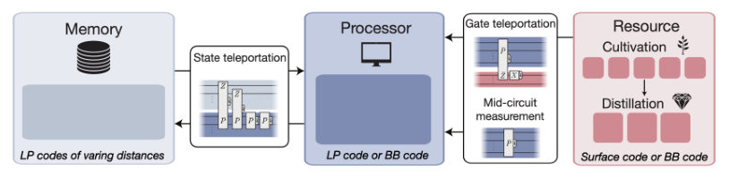
<figcaption class="paper-figure-caption"><b>Fig 1.</b> Fig. 1. Error-correction schemes assigned to different functional modules in an implementation of Shor’s algorithm, where LP, BB, and surface codes represent error-correction schemes. Adapted from Fig. 2b of [9].</figcaption>
</figure>
<figure class="paper-figure-card">
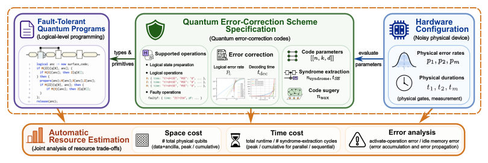
<figcaption class="paper-figure-caption"><b>Fig 2.</b> Fig. 2. Overall architecture of our resource estimation framework for fault-tolerant quantum programs.</figcaption>
</figure>
<figure class="paper-figure-card">
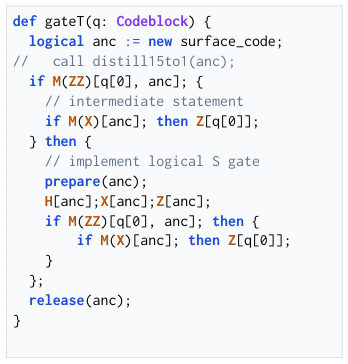
<figcaption class="paper-figure-caption"><b>Fig 3.</b> Fig. 5. Source code for the logical 𝑇gate, where the call to the distillation protocol for preparing the magic state is temporarily commented out.</figcaption>
</figure>
<figure class="paper-figure-card">
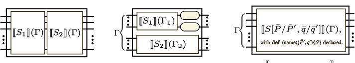
<figcaption class="paper-figure-caption"><b>Fig 4.</b> Fig. 8. Compilation of program statements into dynamic fault-tolerant circuits. Each horizontal wire denotes one codeblock. Yellow boxes ( ) denote repeated syndrome-extraction cycles; light blue boxes ( ) represent physical operations and measurements acting on physical qubits; and dark blue boxes ( ) mark components whose internal physical implementation is abstracted away and treated as a black box by the programming language, with cost and error behavior specified later in the error-correction scheme.</figcaption>
</figure>
<figure class="paper-figure-card">
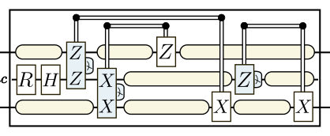
<figcaption class="paper-figure-caption"><b>Fig 5.</b> Fig. 9. Compiled circuit for the CNOT gate. Adjacent syndrome-extraction intervals are merged into longer yellow boxes. The symbol 𝑅denotes logical state preparation, and 𝐻, 𝑋, and 𝑍denote primitive logical gates.</figcaption>
</figure>
</div>

<p><strong>Summary.</strong> This paper addresses the critical challenge of accurately estimating resources for fault-tolerant quantum algorithms. The authors propose a novel programming language and a cross-layer framework that allows programmers to explicitly manage error correction while enabling joint analysis of resource trade-offs. This results in significantly more accurate and detailed resource estimates compared to existing black-box methods.</p>
<p><strong>Why it may be interesting.</strong> While focused on quantum computation theory, the systematic approach to resource accounting across multiple abstraction layers is highly relevant for developing robust simulation tools or understanding hardware overheads in any complex physical system modeled by layered control structures.</p>
<details>
<summary>Detailed structure</summary>
<p><strong>Main problem.</strong> Resource estimation for fault-tolerant quantum computation is difficult because existing tools either force programmers to handle low-level hardware details or abstract away error correction schemes, leading to inaccurate resource utilization estimates.</p>
<p><strong>Main result.</strong> The proposed framework enables substantial resource savings and provides detailed, fine-grained, and accurate resource estimates by jointly analyzing the logical program and its associated error-correction schemes.</p>
<p><strong>Method.</strong> The authors introduce a specialized quantum programming language and a cross-layer resource-estimation framework that allows programmers to define QEC schemes explicitly while enabling joint analysis across different abstraction layers.</p>
<p><strong>Model / system.</strong> The work focuses on Fault-Tolerant Quantum Computation (FTQC), where logical qubits are encoded using physical qubits via Quantum Error-Correction Schemes ($\langle	ext{QEC}
angle$). The framework models the compilation and execution flow from high-level logic down to hardware configuration.</p>
<p><strong>Key observables.</strong> Space cost (# total physical qubits), Time cost (total runtime / syndrome-extraction cycles), and error rates (e.g., activate-operation vs. idle memory error).</p>
<p><strong>Important parameters / regimes.</strong> Code distances ($d_{data}, d_{anc}$), the underlying physical error rate ($p_{phy} = 3 	imes 10^{-3}$), and mean decoding latency.</p>
<p><strong>Assumptions / limitations.</strong> The analysis requires a joint, cross-layer analysis of the program and QEC specifications, which is more complex than independent estimation methods. It also assumes that decoding latency can be utilized by inserting intermediate statements.</p>
<p><strong>Figures summary.</strong> Figure 2 illustrates the overall architecture of the resource estimation framework across multiple layers (Logical $
ightarrow$ QEC Specification $
ightarrow$ Hardware). Other figures show code examples for logical gates like $T$-gates.</p>
<p><strong>Paper structure.</strong> The paper introduces the problem limitations, presents the novel programming language and cross-layer framework, details the joint analysis methodology, evaluates it on practical large-scale algorithms, and concludes with resource savings demonstrations.</p>
</details>
<details>
<summary>Abstract</summary>
<p>Fault-tolerant quantum computation enables the deployment of practical quantum algorithms but incurs substantial overhead from error correction, making resource estimation a central concern. Beyond case-by-case analyses, existing quantum programming languages either require programmers to manipulate low-level hardware details, rendering fault-tolerant implementations cumbersome, or abstract away the underlying error-correction schemes, reducing the effectiveness of resource utilization and estimation.   To address these limitations while preserving programmability, we present a quantum programming language that enables efficient resource utilization, together with a resource-estimation framework for comprehensive resource analysis. Our framework features programmer-visible abstractions of error-correction schemes and cross-layer program-hardware analysis, allowing systematic exploration of resource trade-offs. We evaluate our approach on detailed fault-tolerant implementations of practical large-scale quantum algorithms, including components typically treated as black boxes in existing frameworks. The results demonstrate that our framework enables substantial resource savings while delivering detailed, fine-grained, and accurate resource estimates for fault-tolerant quantum programs.</p>
</details>
<p><sub><a href="#top">↑ back to top</a></sub></p>

<p><a id="paper-2608.04395"></a></p>
<h3 id="zero-clustering-geometry-in-realistic-fractional-quantum-hall-wave-functions"><a href="http://arxiv.org/abs/2608.04395v1">Zero-Clustering Geometry in Realistic Fractional Quantum Hall Wave Functions</a></h3>
<p><strong>Authors:</strong> Xin Wan, Ziang Wang, Zi-Xiang Hu, Zhao Liu<br>
<strong>Type:</strong> theory · <strong>Category:</strong> strongly correlated electrons · <strong>PDF:</strong> <a href="https://arxiv.org/pdf/2608.04395v1">https://arxiv.org/pdf/2608.04395v1</a><br>
<strong>Analysis basis:</strong> full PDF text, analyzed in chunks
<strong>Topic relevance:</strong> <code>analog quantum simulation</code> <strong>1/5</strong></p>
<div class="figure-strip-hint">↔ Scroll figures horizontally</div>
<div class="paper-figures-scroll">
<figure class="paper-figure-card">
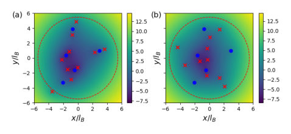
<figcaption class="paper-figure-caption"><b>Fig 1.</b> Figure 1. (a) Location of the ground-state wave function zeros of an N = 6 and ν = 1/3 system with Coulomb interaction. The positions of five electrons are fixed (blue dots), around which the ad- ditional 10 zeros (red crosses) appear in pairs. The background is the filled contour plot of the logarithm of the wave function amplitude with the five electron position fixed. (b) Similar plot for the ground state of Eq. (1) with λ = 1.4.</figcaption>
</figure>
<figure class="paper-figure-card">
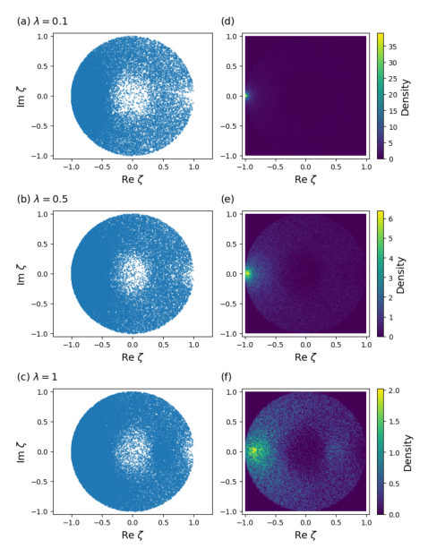
<figcaption class="paper-figure-caption"><b>Fig 2.</b> Figure 2. The scatter plot of ζ in 10,000 realizations of randomly fixed electron positions in the N = 6 and ν = 1/3 system. The mixture of V1 and Coulomb interactions is (a) λ = 0.1, (b) λ = 0.5, and (c) λ = 1, and the corresponding density maps are shown in (d)-(f), respectively.</figcaption>
</figure>
<figure class="paper-figure-card">
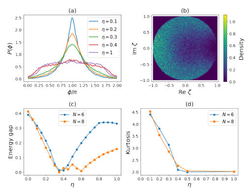
<figcaption class="paper-figure-caption"><b>Fig 3.</b> Figure 3. (a) The distribution of ζ’s argument ϕ at various η. (b) The density map of ζ at η = 0.4. (c) The ground-state energy gap versus η. (d) The kurtosis of P(ϕ) versus η. The system size is N = 6 electrons in (a) and (b).</figcaption>
</figure>
<figure class="paper-figure-card">
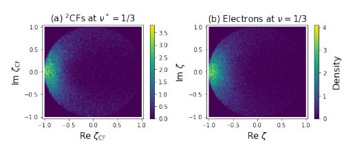
<figcaption class="paper-figure-caption"><b>Fig 4.</b> Figure 5. The density maps of ζ for (a) 2CFs at ν = 1/5 (ν∗= 1/3) and (b) electrons at ν = 1/3. The system size is N = 6 electrons on the torus.</figcaption>
</figure>
<figure class="paper-figure-card">
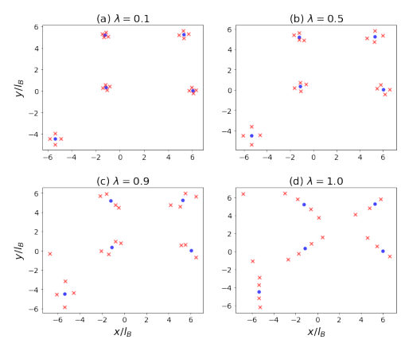
<figcaption class="paper-figure-caption"><b>Fig 5.</b> Figure 4. The evolution of electron positions (blue dots) and non- Pauli zeros (red crosses) with the increasing of λ at ν = 1/5 on the torus for a specific configuration of electrons. The system size is N = 6 electrons. In (d), electrons which are expected at one side of the sample may appear on the opposite side due to the periodic boundary conditions on the torus.</figcaption>
</figure>
</div>

<p><strong>Summary.</strong> This work develops the zero displacement ratio ($\zeta$) as a quantitative diagnostic tool to map out phase transitions in Fractional Quantum Hall systems by analyzing the geometry of wave function zeros. By comparing results from Laughlin models against realistic Coulomb interactions, the authors show that the zero structure collapses or shifts predictably when topological order is lost. The findings strongly support Composite Fermion descriptions over simpler crystal approximations for describing these correlated electron liquids.</p>
<p><strong>Why it may be interesting.</strong> The use of geometric properties (zero clustering) to diagnose topological order is a powerful, non-local probe that complements standard energy gap or correlation function measurements. This methodology could be adapted to study other exotic quantum phases where local observables are insufficient.</p>
<details>
<summary>Detailed structure</summary>
<p><strong>Main problem.</strong> The study aims to quantify how deviations from ideal model wave functions affect the topological properties of Fractional Quantum Hall (FQH) systems, particularly during phase transitions.</p>
<p><strong>Main result.</strong> The zero displacement ratio ($\zeta$) serves as a diagnostic tool: its statistical behavior reveals the transition from Laughlin liquid order to charge-ordered or crystalline phases. Furthermore, Composite Fermion Fluid descriptions provide an improved description of $
u=1/5$ states compared to simple crystal embeddings.</p>
<p><strong>Method.</strong> The analysis relies on calculating and analyzing the geometric distribution (density maps) of zeros in the ground state wave functions using a zero displacement ratio ($\zeta$) derived from nearest neighbor zeros. Overlap amplitudes are also used to compare different theoretical approximations.</p>
<p><strong>Model / system.</strong> The system is strongly interacting electrons confined to the Lowest Landau Level, modeled at fractional fillings like $
u=1/3$ and $
u=1/5$. The Hamiltonian is varied by mixing terms between simple pseudopotentials ($V_1$) and full Coulomb interactions ($H_C$).</p>
<p><strong>Key observables.</strong> Zero displacement ratio ($\zeta$), density distribution $P(\phi)$ of the zero argument, Kurtosis ($K$) of this distribution, Overlap Amplitude ($O$), and Pair Correlation Function ($g(r, R)$).</p>
<p><strong>Important parameters / regimes.</strong> Filling fractions $
u=1/3$ and $
u=1/5$; mixing parameters ($\lambda$ or $\eta$); the ratio defining $\zeta$.</p>
<p><strong>Assumptions / limitations.</strong> The analysis often relies on studying specific small-N systems ($N=3$) to extract general scaling laws, and approximations are made when constructing Composite Fermion states.</p>
<p><strong>Figures summary.</strong> Figures illustrate the evolution of zero patterns (density maps) as interaction strength changes, showing shifts in $\zeta$ peaks. Other figures track order parameters like $P(\phi)$ and overlap amplitudes ($O$) versus tuning parameters ($\lambda$ or $\eta$).</p>
<p><strong>Paper structure.</strong> The paper systematically analyzes the geometry of zeros for different FQH states ($
u=1/3$, $
u=1/5$), introducing the zero displacement ratio as a diagnostic. It then compares results from idealized Laughlin models against realistic Coulomb interactions, culminating in the development and testing of Composite Fermion Fluid descriptions.</p>
</details>
<details>
<summary>Abstract</summary>
<p>The clustering pattern of zeros in the ground state of a fractional quantum Hall system is a defining feature of its topological properties. We analyze the geometrical fluctuations of the zeros around individual electrons and propose to use the displacement ratio of the zeros to visualize and measure the distance of a realistic state to a model wave function. The distribution of the zero displacement ratio behaves like an order parameter in the transition from a Laughlin phase to a topologically trivial one. The statistical comparison between quantum Hall states belonging to different Jain sequences leads to a composite fermion fluid description of the $ν= 1/5$ ground state with long-range Coulomb interaction that agrees almost perfectly for as few as $3$-$5$ electrons, overcoming the long-standing difficulties of accommodating the competing liquid and crystal orders at short distances.</p>
</details>
<p><sub><a href="#top">↑ back to top</a></sub></p>
<h2 id="other-papers-3">Other papers (3)</h2>
<p><em>Papers from primary archives without highlighted authors or any topic match. Click to expand.</em></p>
<details>
<summary>Show other papers</summary>

<p><a id="paper-2608.04252"></a></p>
<h3 id="dynamical-lie-algebras-cannot-describe-shallow-qaoa-cragged-terrains-barren-plateaus-and-empirical-hardness-models"><a href="http://arxiv.org/abs/2608.04252v1">Dynamical Lie Algebras Cannot Describe Shallow QAOA: Cragged Terrains, Barren Plateaus, and Empirical Hardness Models</a></h3>
<p><strong>Authors:</strong> Harrison Copp, Charlton Li, Anžej Margeta-Cacace, Amy Qiao<br>
<strong>Type:</strong> both · <strong>Category:</strong> quantum information and computing · <strong>PDF:</strong> <a href="https://arxiv.org/pdf/2608.04252v1">https://arxiv.org/pdf/2608.04252v1</a><br>
<strong>Analysis basis:</strong> full PDF text, analyzed in chunks</p>
<div class="figure-strip-hint">↔ Scroll figures horizontally</div>
<div class="paper-figures-scroll">
<figure class="paper-figure-card">
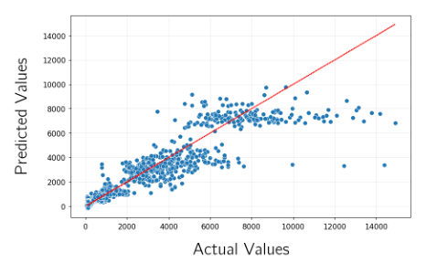
<figcaption class="paper-figure-caption"><b>Fig 1.</b> Figure 1. Performance of the graph convolutional neural net- work when training on N from 1 to 16 and predicting the number of calls to the quantum circuit on N from 19 to 20. The stratification into three general sections is possibly due to the presence of three distinct graph distributions in our data and the model categorizing its predictions to a signifi- cant degree based off this tricategorization.</figcaption>
</figure>
<figure class="paper-figure-card">
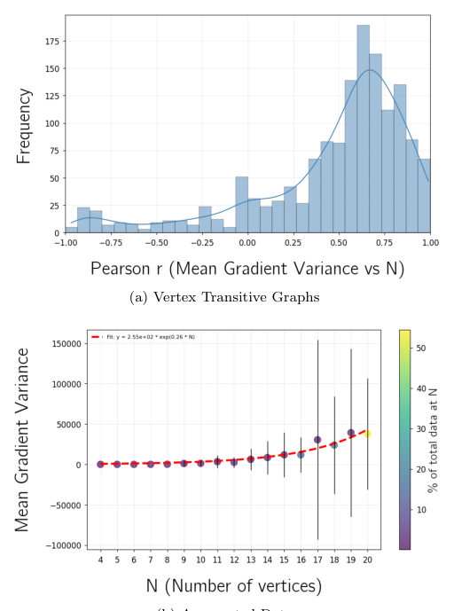
<figcaption class="paper-figure-caption"><b>Fig 2.</b> Figure 3. (a) Pearson r Distribution for Vertex Tran- sitive Graphs. Pearson correlation coefficients of the mean variance of gradients against N for each cluster of random graphs. We a similarly left-skewed distribution, indicating that vertex transitive graphs also exhibit widespread cragged terrain behavior. (b) Aggregated Vertex Transitive Data also is a Cragged Terrain. Plotting the mean variance of the gradients for each value of N for p ∈{1, 2, 3, 4}, we observe a positive exponential relationship with Pearson cor- relation coefficient r = 0.941. Although the error bars do not observe the same exponential relation as observed in the random graphs (see Figure IV B 1), we notice...</figcaption>
</figure>
<figure class="paper-figure-card">
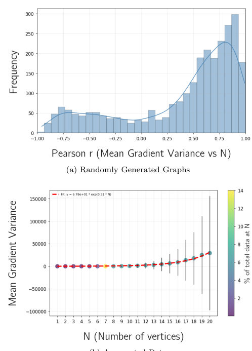
<figcaption class="paper-figure-caption"><b>Fig 3.</b> Figure 2. (a) Pearson r Distribution. Pearson correla- tion coefficients of the mean variance of gradients against N for each cluster of random graphs. The highly left-skewed distribution indicates widespread “cragged terrain” behavior. (b) Aggregated Data is a Cragged Terrain. Plotting the mean variance of the gradients for each value of N (each point and its error bars represent the average value and stan- dard deviation of the subset of the data at that value of N) for p ∈{1, 3, 5, 10}, we observe a positive exponential relationship with Pearson correlation coefficient r = 0.977. Curiously, the standard deviations at each N also had a positive exponential correlation, this time with a...</figcaption>
</figure>
<figure class="paper-figure-card">
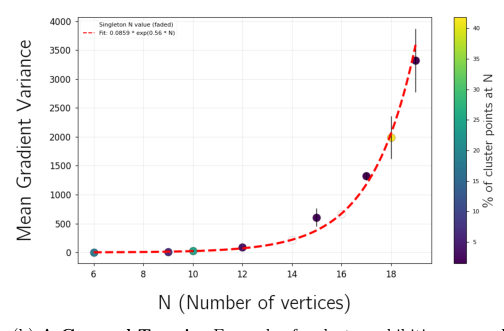
<figcaption class="paper-figure-caption"><b>Fig 4.</b> Figure 4. Example of barren plateau and cragged ter- rain cluster behaviors.</figcaption>
</figure>
<figure class="paper-figure-card">
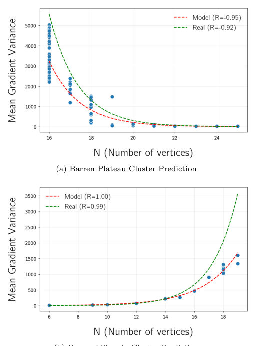
<figcaption class="paper-figure-caption"><b>Fig 5.</b> Figure 5. GCNN Predicts Barren Plateaus and Cragged Terrains. Example of the graph neural network predictions for a cluster of graphs exhibiting a barren plateau and cragged terrain. The clusters are the same as in Figures 4a and 4b: von Neumann entropy for p = 3 and edge density for p = 5, respectively. The red fit line is the fit for the model predictions, the green fit line is the original data fit, and the blue data points are predicted values.</figcaption>
</figure>
</div>
<p><strong>Summary.</strong> This work investigates the loss landscape of QAOA for MIS, finding that established theory based on Dynamical Lie Algebras fails in shallow circuits. Instead of barren plateaus, the landscapes exhibit 'cragged terrains' with polynomially increasing variance. The findings emphasize that empirical, data-driven models are necessary to characterize VQA hardness accurately.</p>
<p><strong>Why it may be interesting.</strong> It provides a critical, empirically grounded challenge to highly abstract theoretical frameworks (like DLA) used to predict VQA performance, suggesting that practical limitations (shallow depth) invalidate deep mathematical assumptions.</p>
<details>
<summary>Detailed structure</summary>
<p><strong>Main problem.</strong> To determine if theoretical predictions based on Dynamical Lie Algebras (DLA) accurately describe the loss landscape scaling of shallow Variational Quantum Algorithms (VQAs), specifically for QAOA applied to MIS.</p>
<p><strong>Main result.</strong> The DLA theory fails in the shallow-circuit regime, as empirical studies show that 'cragged terrains' (polynomial variance increase) are common, contradicting the predicted exponential vanishing variances associated with 2-design assumptions.</p>
<p><strong>Method.</strong> A combination of large-scale numerical simulations across thousands of graph instances and training Empirical Hardness Models (EHMs) to predict instance-wise landscape metrics.</p>
<p><strong>Model / system.</strong> The study focuses on VQAs, particularly QAOA for the Maximum Independent Set (MIS) problem, using parametrized quantum circuits acting on an N-qubit Hilbert space. The theoretical framework involves analyzing the circuit ensemble's adherence to a 2-design property derived from DLA theory.</p>
<p><strong>Key observables.</strong> Loss function variance ($  ext{Var}<em>{  heta}[\partial</em>\mu C(   heta)]$), Barren Plateau (BP) vs. Cragged Terrain scaling, and model prediction accuracy ($R^2$).</p>
<p><strong>Important parameters / regimes.</strong> Circuit depth (shallow regime), system size ($N$), graph structure (random vs. vertex-transitive).</p>
<p><strong>Assumptions / limitations.</strong> The DLA theory assumes the circuit ensemble forms an approximate 2-design, which is shown to be insufficient for shallow circuits; EHMs are trained on finite subsets of data.</p>
<p><strong>Figures summary.</strong> Figures illustrate GCNN predictions for gradient variance across different scaling regimes (BP vs. cragged terrains) using metrics like von Neumann entropy and edge density.</p>
<p><strong>Paper structure.</strong> The paper contrasts the theoretical DLA prediction (based on 2-design theory) with empirical results from QAOA-MIS, demonstrating where the theory breaks down in shallow circuits. It concludes by validating the utility of data-driven EHMs over asymptotic unitary design theories for this regime.</p>
</details>
<details>
<summary>Abstract</summary>
<p>The dynamical Lie algebraic (DLA) theory of variational quantum algorithms (VQAs) predicts commonplace exponentially vanishing loss and gradient variances for sufficiently deep parametrized circuits. In this work, we show that these predictions fail dramatically in the shallow-circuit (and particularly constant-depth) regime for the Quantum Approximate Optimization Algorithm (QAOA) applied to the maximum independent set (MIS) problem. In a large-scale numerical study across $\sim$23,000 problem instances, we find that barren plateaus are rare, while landscapes whose variances polynomially increase with system size---which we term "cragged terrains"---are common across graph families. This aggregate polynomial growth persists both for generic, low-symmetry random graphs and for highly symmetric vertex-transitive graphs, indicating that DLA-based variance predictions do not describe landscape scaling in this regime. As a stopgap alternative to the theory, we train empirical hardness models to predict instance-wise hardness metrics for QAOA-MIS. While these models generalize poorly, they nonetheless recover the correct landscape scaling class (barren plateau vs. cragged terrain) with high fidelity. Taken together, our results identify shallow QAOA for MIS as a prototypical setting in which asymptotic, unitary-design-centric predictions may be fundamentally insufficient to describe shallow variational quantum algorithms more broadly, emphasizing the need for more empirically-informed models of VQA loss landscapes.</p>
</details>
<p><sub><a href="#top">↑ back to top</a></sub></p>

<p><a id="paper-2608.04627"></a></p>
<h3 id="efficient-depth-ancilla-tradeoffs-for-hamming-weight-computation-and-symmetric-boolean-functions"><a href="http://arxiv.org/abs/2608.04627v1">Efficient Depth--Ancilla Tradeoffs for Hamming Weight Computation and Symmetric Boolean Functions</a></h3>
<p><strong>Authors:</strong> Wei Zi, Pei Yuan, Junhong Nie, Shengyu Zhang<br>
<strong>Type:</strong> theory · <strong>Category:</strong> quantum information and computing · <strong>PDF:</strong> <a href="https://arxiv.org/pdf/2608.04627v1">https://arxiv.org/pdf/2608.04627v1</a><br>
<strong>Analysis basis:</strong> full PDF text, analyzed in chunks</p>
<div class="figure-strip-hint">↔ Scroll figures horizontally</div>
<div class="paper-figures-scroll">
<figure class="paper-figure-card">
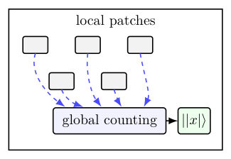
<figcaption class="paper-figure-caption"><b>Fig 1.</b> Figure 1: Overview of the constructions. Panel (a) shows the blocked reduction from Hamming weight computation to weighted counting. Panel (b) shows the dynamic weighted-counting primitive: fan-out prepares redundant Fourier phase states for S = P</figcaption>
</figure>
<figure class="paper-figure-card">
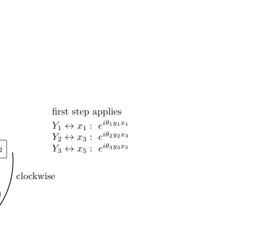
<figcaption class="paper-figure-caption"><b>Fig 2.</b> Figure 3: One elementary step of the cyclic-tour schedule for K = 3 and q = 2. The double arrows indicate the three disjoint control–data swaps performed in parallel. Before each swap, the corresponding controlled phase is applied.</figcaption>
</figure>
<figure class="paper-figure-card">
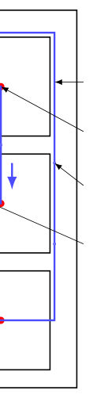
<figcaption class="paper-figure-caption"><b>Fig 3.</b> Figure 4: Layout for the multi-output phase gadget. The large patch is partitioned into K square subpatches. Each subpatch contains one root site. The corridor cycle passes through all roots. In each round, the control currently at a root first interacts with the interior data of that subpatch, and then moves along the corridor to the next root.</figcaption>
</figure>
<figure class="paper-figure-card">
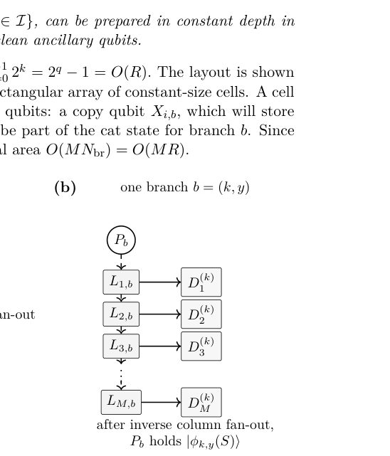
<figcaption class="paper-figure-caption"><b>Fig 4.</b> Figure 5: Two-dimensional weighted phase preparation. Panel (a) shows the M × Nbr rectangular layout. Row fan-out distributes each input bit zi to all branches, and column fan-out prepares one cat state for each branch root Pb. Each cell (i, b) contains a copy qubit Xi,b and a leaf qubit Li,b. Panel (b) shows one branch b = (k, y): the local gates D(k) i accumulate the weighted phase, and after inverse column fan-out the root qubit is left in the state |ϕk,y(S)⟩.</figcaption>
</figure>
<figure class="paper-figure-card">
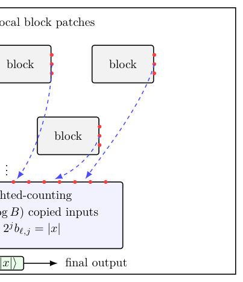
<figcaption class="paper-figure-caption"><b>Fig 5.</b> Figure 6: Schematic layout for Theorem 4.15. The two-dimensional grid contains L = ⌈n/B⌉disjoint local block patches and one global weighted-counting patch. Each local patch computes a block Hamming weight, and the corresponding bits bℓ,j are copied by constant-depth dynamic long-range CNOTs along the indicated dashed paths to input qubits of the global patch. The global patch then computes S = P ℓ,j 2jbℓ,j = |x| and writes the result to the final output register.</figcaption>
</figure>
</div>
<p><strong>Summary.</strong> This paper analyzes the resource trade-offs (depth vs. ancillas) for computing fundamental functions like Hamming weight in quantum circuits. By comparing standard and dynamic models under different connectivity constraints, they show how constant depth can be achieved using a polynomial number of ancillary qubits. This work is vital for understanding the practical limits of implementing complex quantum algorithms.</p>
<p><strong>Why it may be interesting.</strong> While focused on abstract quantum circuits, achieving constant depth with polynomial ancillary overhead is crucial for designing scalable quantum algorithms that can run efficiently on near-term hardware architectures.</p>
<details>
<summary>Detailed structure</summary>
<p><strong>Main problem.</strong> The paper investigates the optimal trade-offs between circuit depth and the number of ancillary qubits required to compute Hamming weight and general symmetric Boolean functions.</p>
<p><strong>Main result.</strong> They establish that in dynamic quantum circuits, constant depth can be achieved for these computations, although this requires an ancillary qubit count scaling as $O(n^{1+\epsilon} 	ext{polylog } n)$.</p>
<p><strong>Method.</strong> The authors employ circuit construction techniques by reducing the problem to weighted counting and applying analysis across different connectivity models (all-to-all vs. 2D) and circuit types (standard vs. dynamic).</p>
<p><strong>Model / system.</strong> The study is purely theoretical, analyzing quantum circuits designed for specific computational tasks on abstract qubit architectures constrained by connectivity (all-to-all or 2D nearest-neighbor grid).</p>
<p><strong>Key observables.</strong> Circuit Depth ($D$) and Ancilla Count ($   ext{Ancilla}$), relative to the input size $n$.</p>
<p><strong>Important parameters / regimes.</strong> Connectivity model (All-to-all, 2D); Circuit Model (Standard vs. Dynamic); Input Size ($n$).</p>
<p><strong>Assumptions / limitations.</strong> The analysis distinguishes between output register space and ancillary workspace; dynamic models rely on measurement-based fan-out and cat-state recovery.</p>
<p><strong>Figures summary.</strong> Figures illustrate the high-level construction: a reduction to weighted counting, the dynamic weighted-counting primitive, and its implementation within a two-dimensional patch geometry.</p>
<p><strong>Paper structure.</strong> The paper systematically analyzes the depth-ancilla tradeoffs for Hamming weight computation first, then generalizes these results to arbitrary symmetric Boolean functions across four settings (standard/dynamic $   imes$ all-to-all/2D).</p>
</details>
<details>
<summary>Abstract</summary>
<p>Hamming weight computation maps an $n$-bit input to the number of ones it contains. It is a basic subroutine in quantum computing, and the core building block for symmetric Boolean functions, whose value depends only on the Hamming weight of the input. Moreover, symmetric Boolean functions are among the most common primitives in quantum computing. Efficient circuits for both problems are therefore important for the efficiency of many quantum algorithms. We study the depth-ancilla tradeoffs of Hamming weight computation under two qubit connectivity models, all-to-all and two-dimensional nearest-neighbor square grid (2D), in both the standard and dynamic circuit models. In the standard all-to-all model, we obtain depth $O(\log n)$ with a sublinear number of ancillas. In the standard 2D model, we give a circuit of depth $O(\sqrt n)$ with $O(\log^2 n)$ ancillas, and a matching lower bound showing that $Θ(\sqrt n)$ is optimal. In both dynamic models, we obtain constant-depth circuits with $O(n^{1+\varepsilon}\operatorname{polylog}\,n)$ ancillary qubits for every fixed $\varepsilon>0$. All constructions give a smooth depth-ancilla tradeoff, and they also extend to arbitrary symmetric Boolean functions.</p>
</details>
<p><sub><a href="#top">↑ back to top</a></sub></p>

<p><a id="paper-2608.04481"></a></p>
<h3 id="impact-of-molecular-orbital-localization-on-quantum-computational-resources-for-hamiltonian-simulation-a-benchmark-study-of-hydrogen-chain-systems"><a href="http://arxiv.org/abs/2608.04481v1">Impact of molecular orbital localization on quantum computational resources for Hamiltonian simulation: A benchmark study of hydrogen chain systems</a></h3>
<p><strong>Authors:</strong> Kenji Sugisaki, Yuhei Tachi, Masayoshi Terabe, Hiroyuki Tezuka<br>
<strong>Type:</strong> theory · <strong>Category:</strong> quantum information and computing · <strong>PDF:</strong> <a href="https://arxiv.org/pdf/2608.04481v1">https://arxiv.org/pdf/2608.04481v1</a><br>
<strong>Analysis basis:</strong> full PDF text, analyzed in chunks</p>
<div class="figure-strip-hint">↔ Scroll figures horizontally</div>
<div class="paper-figures-scroll">
<figure class="paper-figure-card">
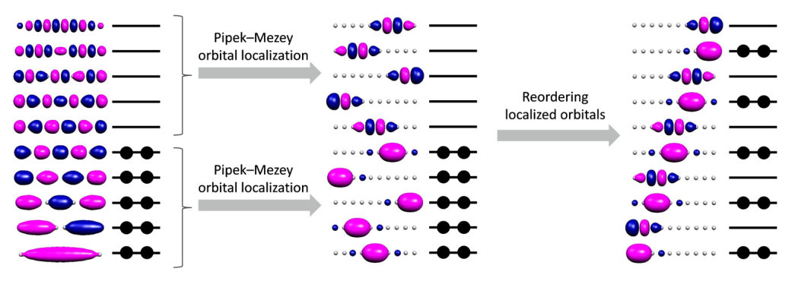
<figcaption class="paper-figure-caption"><b>Fig 1.</b> FIG. 1. Procedure of orbital localization, in the case of H10. Black circles represent the electron occupancies in the RHF wave function.</figcaption>
</figure>
<figure class="paper-figure-card">
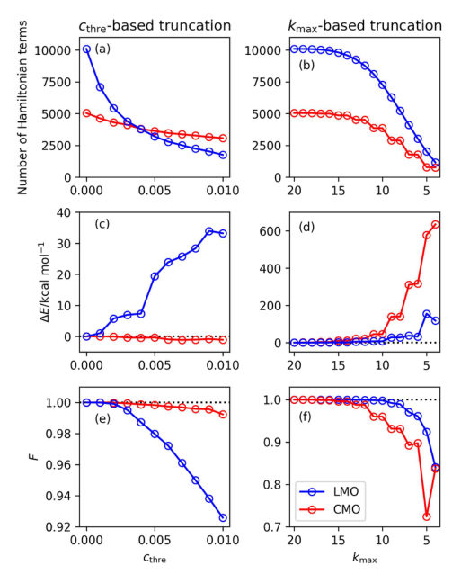
<figcaption class="paper-figure-caption"><b>Fig 2.</b> FIG. 2. Dependence of Hamiltonian truncation strategies (cthre-based (a, c, and e) and kmax-based (b, d, and f) ap- proaches) on the number of second-quantized Hamiltonian terms (a and b), ground-state energy error (c and d), and ground-state fidelity (e and f), in the H10 system.</figcaption>
</figure>
<figure class="paper-figure-card">
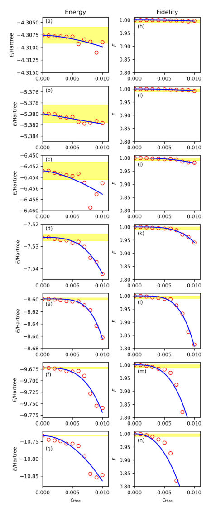
<figcaption class="paper-figure-caption"><b>Fig 3.</b> FIG. 3. Dependence of the threshold value (cthre) on the ground-state energy (a–g) and ground-state fidelity (h–n) for H8 (a and h), H10 (b and i), H12 (c and j), H14 (d and k), H16 (e and l), H18 (f and m), and H20 (g and n) in the CMO- based wave function expansion. Red open circles represent calculated energies and fidelities, and blue curves specify the fitted curve obtained using eqs (6) and (7) for energies and fidelities, respectively. The yellow shaded area represents the region where the energy error |∆E| ≤1.0 kcal mol−1 or the fidelity F ≥0.99.</figcaption>
</figure>
<figure class="paper-figure-card">
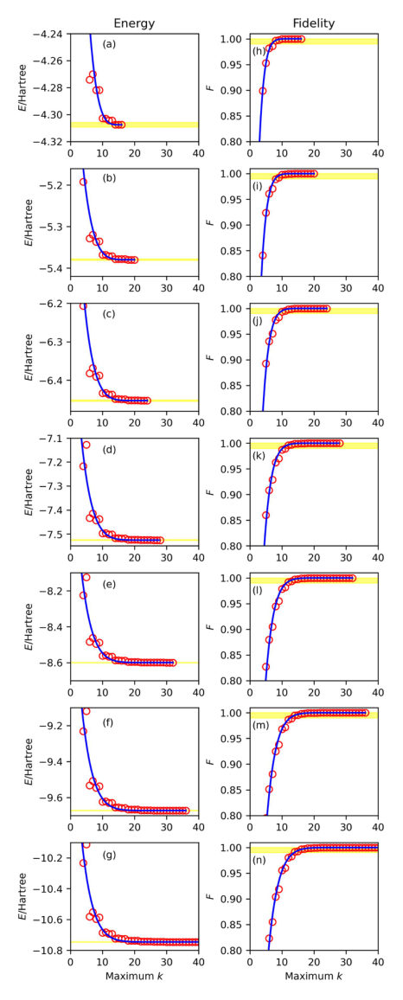
<figcaption class="paper-figure-caption"><b>Fig 4.</b> FIG. 4. Dependence of the maximum locality value (kmax) on the ground-state energy (a–g) and ground-state fidelity (h–n) for H8 (a and h), H10 (b and i), H12 (c and j), H14 (d and k), H16 (e and l), H18 (f and m), and H20 (g and n) in the LMO- based wave function expansion. Red open circles represent calculated energies and fidelities, and blue curves specify the fitted curve obtained using eqs (8) and (9) for energies and fidelities, respectively. The yellow shaded area represents the region where the energy error |∆E| ≤1.0 kcal mol−1 or the fidelity F ≥0.99.</figcaption>
</figure>
<figure class="paper-figure-card">
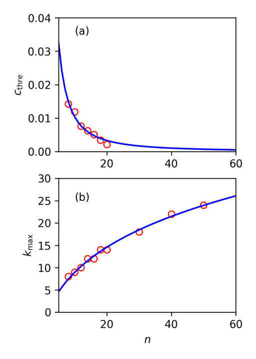
<figcaption class="paper-figure-caption"><b>Fig 5.</b> FIG. 5. Dependence of the threshold value required for F ≥0.99 on the number of hydrogen atoms n. Open red circles represent the threshold values obtained from the fit- ting functions in eqn (7) for the CMO basis, and the kmax values achieving F ≥0.99 in the LMO basis. The blue curves show the fitted functions, cthre = 1.3895n−2.0707 for the CMO basis and kmax = 1.8912(log n)1.8614. (a) Threshold value on the coefficient in the CMO-based wave function expansion. (b) Maximum locality value in the LMO-based wave function expansion.</figcaption>
</figure>
</div>
<p><strong>Summary.</strong> This study benchmarks Hamiltonian simulation resources for hydrogen chains using different molecular orbital bases and truncation methods. It finds that employing localized orbitals (LMOs) with locality-based truncation yields a dramatically better scaling of quantum gate requirements—polylogarithmic versus polynomial—compared to canonical molecular orbitals (CMOs). This provides critical guidance for designing efficient quantum algorithms for large-scale quantum chemistry.</p>
<p><strong>Why it may be interesting.</strong> This work directly addresses resource estimation in quantum chemistry simulations, providing concrete guidelines on how basis set choice (localization) can fundamentally change the complexity scaling from polynomial to polylogarithmic, which is crucial for feasibility studies.</p>
<details>
<summary>Detailed structure</summary>
<p><strong>Main problem.</strong> The study investigates how the choice of molecular orbital basis set (CMO vs. LMO) and Hamiltonian truncation strategy impacts the required quantum resources for simulating electronic structure via Trotter decomposition.</p>
<p><strong>Main result.</strong> The analysis shows an exponential advantage for using localized orbitals (LMOs) combined with locality-based Hamiltonian truncation, leading to a polylogarithmic growth in gate count compared to the polynomial growth seen with canonical molecular orbitals (CMOs).</p>
<p><strong>Method.</strong> The authors compare quantum resource estimation (quantum gate counts) derived from simulating hydrogen chains using first-order Trotter decomposition across different basis sets and truncation methods.</p>
<p><strong>Model / system.</strong> The model is one-dimensional hydrogen chain systems ($  ext{H}_n$), analyzed by constructing a qubit Hamiltonian via the Jordan–Wigner transformation. The core comparison involves two orbital bases: Hartree–Fock canonical molecular orbitals (CMOs) and Pipek–Mezey localized molecular orbitals (LMOs).</p>
<p><strong>Key observables.</strong> Number of quantum gates ($\#	ext{Clifford}(1q)$, $\#	ext{CNOT}$, $\#	ext{Rz}$), ground-state energy, and fidelity ($F$).</p>
<p><strong>Important parameters / regimes.</strong> System size (up to $    ext{H}<em ext_thre="ext{thre">{100}$), truncation thresholds ($ ext{c}</em>$ or $k_{\max}$), and the bond dimension ($D$) for related DMRG convergence checks.}</p>
<p><strong>Assumptions / limitations.</strong> The analysis relies on first-order Trotter decomposition, and comparisons are made between truncated and full Hamiltonians to estimate resource scaling.</p>
<p><strong>Figures summary.</strong> Figures illustrate the procedure of orbital localization (for $    ext{H}<em 50>{10}$) and show the distribution of rotational angles ($  ext{Rz}(    heta)$ gates) for larger chains ($  ext{H}</em>$), comparing original vs. truncated Hamiltonians.</p>
<p><strong>Paper structure.</strong> The paper systematically compares computational costs by first analyzing short chains (ground-state energy/fidelity) to determine optimal truncation thresholds, and then extrapolating these findings to estimate the scaling of quantum gate resources for very long chains ($   ext{H}_{100}$).</p>
</details>
<details>
<summary>Abstract</summary>
<p>We investigate how molecular orbitals used as the basis of wave function expansion and how operator coefficient-based and locality-based Hamiltonian truncation affects the computational cost of Trotter decomposition-based Hamiltonian simulation in one-dimensional hydrogen chain systems. The analysis is performed using both Hartree--Fock canonical molecular orbitals (CMOs) and Pipek--Mezey-based localized molecular orbitals (LMOs). For short hydrogen chains, we evaluate the ground-state energy and fidelity and find that, in the CMO-based wave function expansion, introducing a threshold on Hamiltonian coefficients is effective in reducing the gate cost while maintaining computational accuracy. In contrast, in the LMO-based wave function expansion, operator locality-based Hamiltonian truncation is found to be more effective. By fitting the relationship between the truncation threshold and the ground-state energies and fidelities with empirical formulas, we estimate the threshold values required to achieve high fidelity ($F \ge 0.99$) in the ground-state wave function. Using the estimated thresholds, we then perform quantum gate resource estimation for longer hydrogen chains up to H$_{100}$. The results suggest an exponential advantage of the LMO-based wave function expansion with Hamiltonian truncation: the number of quantum gates required for Hamiltonian simulation grows polynomially when the CMO-based wave function expansion with operator coefficient-based Hamiltonian truncation is adopted, whereas it grows polylogarithmically when the LMO-based wave function expansion is combined with operator locality-based Hamiltonian truncation. These results provide useful guidelines for choosing orbital representations and Hamiltonian truncation strategies in large-scale quantum chemical simulations.</p>
</details>
<p><sub><a href="#top">↑ back to top</a></sub></p>
</details>
<h2 id="secondary-cond-mat-archives">Secondary cond-mat archives</h2>
<p><em>Papers from cond-mat.mtrl-sci, mes-hall, other, soft, supr-con. These archives are de-prioritized — they appear at the end regardless of relevance score.</em></p>
<h3 id="relevant-in-secondary-archives-11">Relevant in secondary archives (11)</h3>

<p><a id="paper-2608.04969"></a></p>
<h3 id="rkky-interaction-as-a-probe-of-spin-splitting-and-odd-parity-nature-in-floquet-collinear-magnets"><a href="http://arxiv.org/abs/2608.04969v1">RKKY interaction as a probe of spin splitting and odd-parity nature in Floquet collinear magnets</a></h3>
<p><strong>Authors:</strong> Hou-Jian Duan, Yong-Jia Wu, Xiaoliang Xiao, Ming-Xun Deng, Mou Yang, Rui-Qiang Wang<br>
<strong>Type:</strong> theory · <strong>Category:</strong> other · <strong>PDF:</strong> <a href="https://arxiv.org/pdf/2608.04969v1">https://arxiv.org/pdf/2608.04969v1</a><br>
<strong>Analysis basis:</strong> full PDF text, analyzed in chunks
<strong>Topic relevance:</strong> 🔥 <code>exotic spin models in light-matter</code> <strong>4/5</strong> · 🔥 <code>non-equilibrium dynamics</code> <strong>4/5</strong> · <code>Keldysh / 2PI / non-Gaussian methods</code> <strong>3/5</strong> · <code>methods for driven-dissipative</code> <strong>3/5</strong> · <code>spintronics-quantum-optics interface</code> <strong>3/5</strong> · <code>analog quantum simulation</code> <strong>2/5</strong> · <code>driven-dissipative phase transition</code> <strong>1/5</strong> · <code>non-equilibrium universality</code> <strong>1/5</strong></p>
<div class="figure-strip-hint">↔ Scroll figures horizontally</div>
<div class="paper-figures-scroll">
<figure class="paper-figure-card">
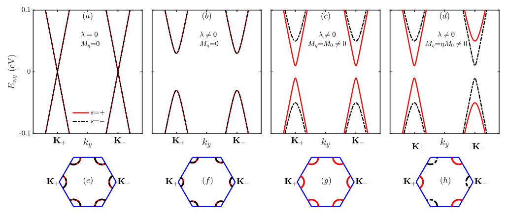
<figcaption class="paper-figure-caption"><b>Fig 1.</b> FIG. 1. ky-axis dispersion (a∼d) and Fermi surfaces at uF = 0.045 eV (e∼h) for different systems: (a,e) graphene (λ = 0, Mη = 0), (b,f) collinear AFM (λ , 0, Mη = 0), (c,g) USS-AFM (λ , 0, Mη = M0 , 0), and (d,h) collinear f -wave magnet (λ , 0, Mη , 0). The nonzero value of λ is taken as λ = 0.03t0, which is on the same order of magnitude as the parameters used in Ref. [67], corresponding to the antiferromagnetic exchange energy in the graphene-based honeycomb lattice. The nonzero value of M0 is set to M0 = 0.02t0, and we set t0 = 1 eV for convenience.</figcaption>
</figure>
<figure class="paper-figure-card">
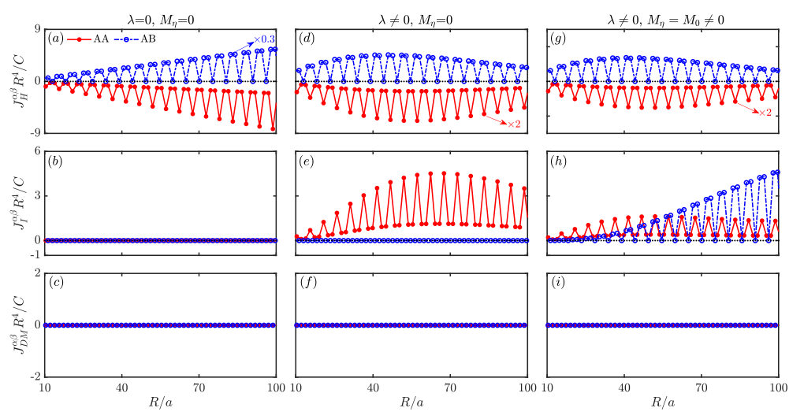
<figcaption class="paper-figure-caption"><b>Fig 2.</b> FIG. 2. RKKY components Jαβ i (i = H, I, DM) as a function of the impurity distance R for three baseline systems: (a∼c) graphene (λ = 0, Mη = 0), (d∼f) the collinear AFM (λ , 0, Mη = 0), and (g∼i) the USS-AFM (λ , 0, Mη = M0 , 0). Solid and open circles represent the RKKY interactions for impurities placed on the same and different sublattices, respectively. Here, C = J2 c/(2π) and uF = 0.</figcaption>
</figure>
<figure class="paper-figure-card">
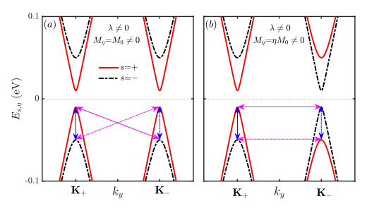
<figcaption class="paper-figure-caption"><b>Fig 3.</b> FIG. 5. ky-axis dispersion for (a) the USS-AFM (λ , 0, Mη = M0 , 0) and (b) the collinear f -wave magnet (λ , 0, Mη = ηM0 , 0). The blue arrows (solid and dashed) schematically represent the intraval- ley contribution, while the magenta ones (solid and dashed) schemat- ically denote the intervalley contribution.</figcaption>
</figure>
<figure class="paper-figure-card">
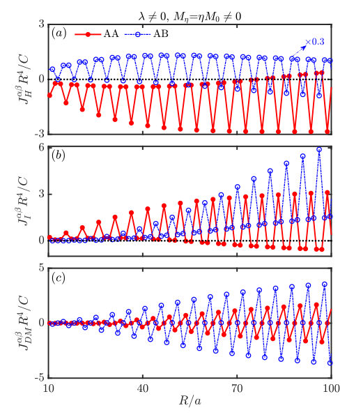
<figcaption class="paper-figure-caption"><b>Fig 4.</b> FIG. 3. RKKY components as a function of impurity distance in the collinear f -wave magnet (λ , 0, Mη = ηM0 , 0). Solid and open circles represent the RKKY interactions for impurities placed on the same and different sublattices, respectively.</figcaption>
</figure>
<figure class="paper-figure-card">
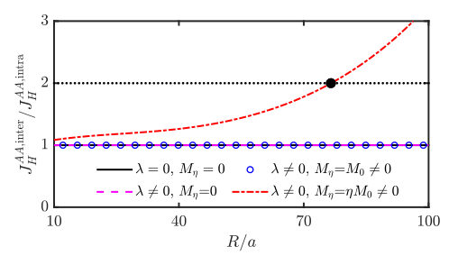
<figcaption class="paper-figure-caption"><b>Fig 5.</b> FIG. 4. Spatial dependence of the ratio JAA,inter H /JAA,intra H for different systems. The parameters for each system are indicated in the legend.</figcaption>
</figure>
</div>

<p><strong>Summary.</strong> The paper demonstrates that the Ruderman-Kittel-Kasuya-Yosida (RKKY) interaction can act as a universal probe for characterizing exotic, odd-parity magnets generated in antiferromagnets using Floquet engineering. By analyzing distinct magnetic signatures within the RKKY coupling—such as specific sign changes and symmetry constraints on the DM term—the authors provide a clear theoretical pathway to experimentally verify these complex quantum states.</p>
<p><strong>Why it may be interesting.</strong> This work provides a powerful, symmetry-based theoretical diagnostic (RKKY) that links abstract concepts like odd-parity spin polarization and Floquet engineering to measurable magnetic responses accessible via techniques like STM spectroscopy.</p>
<details>
<summary>Detailed structure</summary>
<p><strong>Main problem.</strong> The primary challenge is developing a method to detect both spin splitting and confirm the odd-parity nature of exotic magnets predicted to emerge in collinear antiferromagnets via Floquet engineering.</p>
<p><strong>Main result.</strong> The RKKY interaction serves as a unified magnetic probe, yielding distinct signatures like magnetism reversals in Heisenberg/Ising terms and specific symmetries in the DM term that allow clear discrimination of these novel odd-parity magnets.</p>
<p><strong>Method.</strong> The study utilizes theoretical calculations based on the Ruderman-Kittel-Kasuya-Yosida (RKKY) interaction, which is derived using Green's functions applied to effective Floquet Hamiltonians.</p>
<p><strong>Model / system.</strong> The model focuses on collinear $f$-wave magnets realized in 2D collinear antiferromagnets on a honeycomb lattice, compared against baseline systems like graphene and standard AFMs. The physics is governed by an effective low-energy Floquet Hamiltonian.</p>
<p><strong>Key observables.</strong> Distinct magnetic signals from the RKKY interaction: magnetism reversal in Heisenberg/Ising terms, sign alternation of the DM term, and confirmation of odd-parity symmetry ($\mathcal{J}^{	ext{DM}}(\mathbf{R}) = -\mathcal{J}^{	ext{DM}}(C_2^q\mathbf{R})$).</p>
<p><strong>Important parameters / regimes.</strong> The analysis is performed in the high-frequency off-resonant regime of Floquet theory, and the results are shown to be general for $p$-wave magnets ($q=1$).</p>
<p><strong>Assumptions / limitations.</strong> The approach assumes that the RKKY interaction can effectively probe the underlying spin polarization features generated by the Floquet driving.</p>
<p><strong>Figures summary.</strong> Figure 1 illustrates band dispersions and Fermi surfaces for various magnetic systems (graphene, AFM, f-wave magnet). Figure 2 compares the calculated RKKY components ($J^H, J^I, J^{DM}$) versus impurity distance $R$ for different material types.</p>
<p><strong>Paper structure.</strong> The paper establishes the theoretical framework using Floquet engineering to generate odd-parity magnets. It then introduces and applies the RKKY interaction as a diagnostic tool, systematically comparing its calculated components across various magnetic models to isolate the unique signatures of the target f-wave magnet.</p>
</details>
<details>
<summary>Abstract</summary>
<p>Odd-parity magnets were recently proposed to emerge in collinear antiferromagnets (AFMs) via Floquet engineering, with valley-dependent spin splitting underlying the odd-parity spin polarization. This proposal brings about two key challenges: detecting the spin splitting to verify the generation mechanism of these magnets, and identifying such polarization to confirm the odd-parity nature. Here, we show that the Ruderman-Kittel-Kasuya-Yosida (RKKY) interaction provides a unified magnetic probe for both tasks. Taking collinear $f$-wave magnets as a representative example, we find that the RKKY interaction yields distinct magnetic signals of the spin splitting---including a magnetism reversal in the Heisenberg/Ising terms and a sign alternation of the Dzyaloshinskii-Moriya (DM) term---that enable clear discrimination of collinear $f$-wave magnets from other related AFMs. Moreover, the DM term exhibits an $f$-wave shape with odd-parity symmetry, satisfying $J^{αβ}_{DM}(\mathbf{R}) = -J^{αβ}_{DM}(C_{2q}\mathbf{R})$ ($q=3$), which directly reflects the odd-parity spin polarization $S_z(\mathbf{k}) = -S_z(C_{2q}\mathbf{k})$ in momentum space. This behavior persists in $p$-wave magnets ($q=1$), demonstrating the generality of our approach. Our work establishes the RKKY interaction as a versatile probe for detecting band features of collinear odd-parity magnets, with predictions accessible to existing experimental techniques such as spin-polarized scanning tunneling spectroscopy.</p>
</details>
<p><sub><a href="#top">↑ back to top</a></sub></p>

<p><a id="paper-2608.04998"></a></p>
<h3 id="accessing-chern-numbers-from-bloch-eigenstates-singularities"><a href="http://arxiv.org/abs/2608.04998v1">Accessing Chern Numbers From Bloch Eigenstates Singularities</a></h3>
<p><strong>Authors:</strong> Rajesh Asapanna, Rabih El Sokhen, Paolo Aceto, Patrick Popescu-Pampu, Martin Guillot, Jacqueline Bloch, Sylvain Ravets, Clément Hainaut, Alberto Amo, Pierre Delplace<br>
<strong>Type:</strong> both · <strong>Category:</strong> other · <strong>PDF:</strong> <a href="https://arxiv.org/pdf/2608.04998v1">https://arxiv.org/pdf/2608.04998v1</a><br>
<strong>Analysis basis:</strong> full PDF text, analyzed in chunks
<strong>Topic relevance:</strong> 🔥 <code>analog quantum simulation</code> <strong>4/5</strong> · <code>quantum optics experiment</code> <strong>3/5</strong> · <code>non-equilibrium dynamics</code> <strong>2/5</strong> · <code>driven-dissipative phase transition</code> <strong>1/5</strong> · <code>interference shaping light</code> <strong>1/5</strong></p>
<div class="figure-strip-hint">↔ Scroll figures horizontally</div>
<div class="paper-figures-scroll">
<figure class="paper-figure-card">
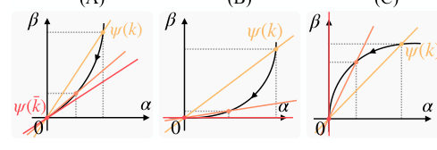
<figcaption class="paper-figure-caption"><b>Fig 1.</b> Figure 1. Trajectories (oriented black lines) of a vector state ψ(k) in C2 when k approaches a zero of ψ(k) at k = ¯k. The different straight lines represent the associated 1-dimensional complex vector space L(k) spanned by ψ(k), for different k along the tra- jectory. When approaching the zero, L(k →¯k) becomes tangent to the trajectory of ψ at 0 (red line), and may coincide with one coordinate axis (B,C). In that case, a local trivialization is ob- tained by projecting ψ onto that axis, as a projection onto the other (perpendicular) axis vanishes. (A) generic case: a projec- tion on either coordinate axis provides a local trivialization of the section.</figcaption>
</figure>
<figure class="paper-figure-card">
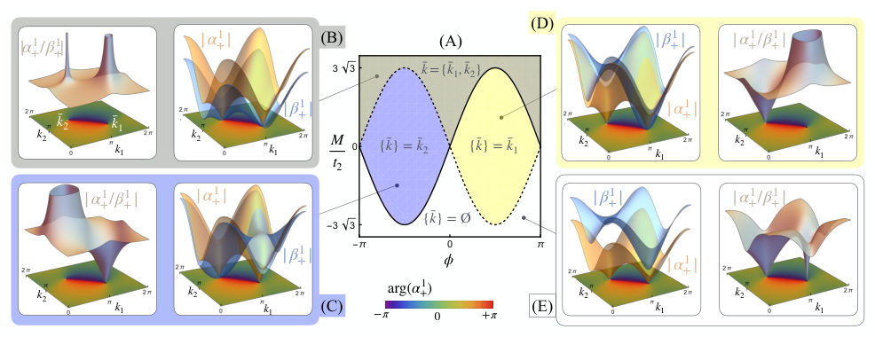
<figcaption class="paper-figure-caption"><b>Fig 2.</b> Figure 2. (A) Phase diagram of the Haldane model obtained from the two different methods. Each coloured domain is characterized by a number of zeros ¯kj of a section, here ψ1 +, or equivalently by the number of zeros ¯qj of the map µ1 + (not shown). The curved</figcaption>
</figure>
<figure class="paper-figure-card">
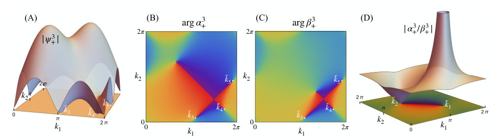
<figcaption class="paper-figure-caption"><b>Fig 3.</b> Figure 3. Zeros-section and tautological bundle methods applied to determine the Chern number in gauge 3 for the Haldane model (yellow domain of Fig. 2, C+ = −1). (A) The norm of the eigenvector ψ3 + in gauge 3 vanishes at three different points (¯k3, ¯k4, ¯k5) in BZ. (D) At those points, the limit α3 +/β3 + is finite, so any of argα3 + (B) or argβ3 + (C) can be chosen as a local trivialized section to determine the indices at those points. The color code for argα3 + and argβ3 + is the same as in Fig. 2</figcaption>
</figure>
<figure class="paper-figure-card">
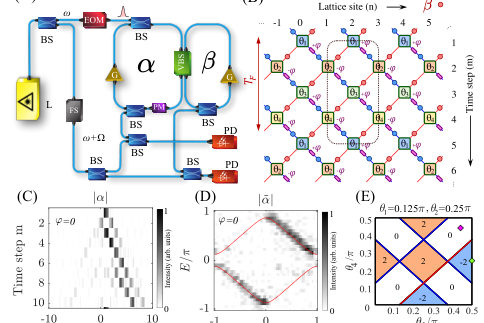
<figcaption class="paper-figure-caption"><b>Fig 4.</b> Figure 4. (A) Scheme of the double ring system with injection and reference laser L, beamsplitters BS, variable beamsplitter VBS, frequency shifter FS, phase modulator PM, Erbium doped amplifier G that compensates for losses and photodiode D. (B) Synthetic split-step lattice for the 4-step protocol. (C) Measured light intensity in the α ring in an example of step-evolution af- ter injection at a single site for a lattice model with θ1 = 0.125π, θ2 = 0.25π, θ3 = 0.5π and θ4 = 0.25π and ϕ = 0. (D) Measured band tomography as a function of quasimomenta k and ϕ for the θi parameters of (c). Analytic bands are overlayed in red. (E) Bulk topological phases according to the Chern number of the...</figcaption>
</figure>
<figure class="paper-figure-card">
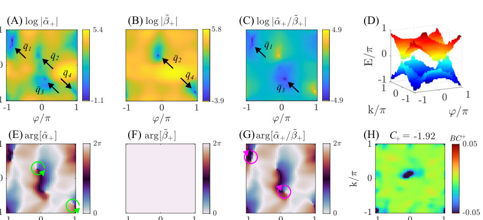
<figcaption class="paper-figure-caption"><b>Fig 5.</b> Figure 5. Upper-band eigenvectors in a topological lattice (C+ = −2). Splitting angles are θ1 = 0.125π, θ2 = 0.25π, θ3 = 0.5π, and θ4 = 0.25π. (A,B) Measured (unnormalized) amplitudes and (E,F) corresponding phases of the Floquet–Bloch eigenvectors on the two sublattices, | ˜α+〉and | ˜β+〉. (C) Amplitude ratio and (G) relative phase between components, ˜α+/ ˜β+. Arrows indicate zeros of the unnormalized eigenvectors. (D) Measured eigenvalues of the Floquet operator. (H) Berry curvature reconstructed from the measured eigenvectors, along with the integrated Chern number of the upper band.</figcaption>
</figure>
</div>

<p><strong>Summary.</strong> The paper introduces two robust theoretical methods to calculate the Chern number of Bloch bands by analyzing phase singularities directly within the eigenstates, rather than integrating the Berry curvature. These methods are successfully applied to a photonic lattice experiment, confirming that the resulting topological invariant is quantized and independent of gauge choice.</p>
<p><strong>Why it may be interesting.</strong> This work provides an experimentally accessible route to topological invariants in condensed matter systems using only measurements of wavefunction phases/zeros, which is highly relevant for quantum optics and photonics research.</p>
<details>
<summary>Detailed structure</summary>
<p><strong>Main problem.</strong> The paper proposes novel methods to directly calculate topological invariants, specifically Chern numbers, of Bloch bands by analyzing phase singularities (vorticities) in the eigenstates, bypassing traditional Berry curvature integration.</p>
<p><strong>Main result.</strong> Two distinct methods—the 0-section method and the tautological bundle method—were successfully applied to demonstrate that the calculated Chern number is robustly quantized and independent of gauge choice, even when using experimental data from photonic lattices.</p>
<p><strong>Method.</strong> The core methodology involves identifying zeros (singularities) in continuous sections of complex line bundles formed by Bloch eigenvectors. This leads to calculating topological indices or winding numbers at these zero points across the Brillouin zone torus.</p>
<p><strong>Model / system.</strong> The theory is applied to two-dimensional insulators, demonstrated using a photonic lattice experiment simulating a quantum walk model governed by Floquet operators. The analysis uses concepts from Bloch band theory and complex geometry.</p>
<p><strong>Key observables.</strong> Chern number ($C_n$), phase vorticities in eigenstates structure, local indices ($   ext{Ind}_{ar{k}_j}$), and winding numbers ($W_j[\sigma]$).</p>
<p><strong>Important parameters / regimes.</strong> The system is characterized by parameters governing the photonic lattice or the Floquet Hamiltonian, leading to topological phases (e.g., $C^+ = -2$ vs. $C^+=0$).</p>
<p><strong>Assumptions / limitations.</strong> For the 0-section method, it is crucial that the eigenvector does not vanish on the plaquette when using raw experimental data; for classical wave systems, non-normalization of eigenvectors is exploited.</p>
<p><strong>Figures summary.</strong> Figures illustrate reconstructed eigenvectors ($   ilde{\alpha}^+,     ilde{eta}^+$) in both topologically trivial ($C=0$) and topological ($C^+=-2$) regimes. They show the relationship between measured data, analytical reconstructions, and the resulting Chern number calculation via index summation.</p>
<p><strong>Paper structure.</strong> The paper develops two theoretical methods (0-section and tautological bundle) for calculating $C_n$ from eigenstate zeros. It then applies these methods to a photonic lattice model derived from Floquet theory, demonstrating gauge invariance by comparing results across different gauges and calculation techniques.</p>
</details>
<details>
<summary>Abstract</summary>
<p>We propose two methods to extract the Chern numbers of the Bloch bands of a two dimensional insulator, and apply them to a photonic lattice experiment. These two methods require the knowledge of the complex-valued components of the Bloch eigenvectors, or their ratios. Unlike other tomography methods relying on the approximate reconstruction of the Berry curvature and its integration over the Brillouin zone, our methods boil down to the observation of phase vorticities in the eigensates structure. Those measurements, robust to experimental noise, yield exactly quantized values. One of the two methods exploits the non-normalization of the eigenmodes, making it particularly relevant for classical wave systems.</p>
</details>
<p><sub><a href="#top">↑ back to top</a></sub></p>

<p><a id="paper-2608.04473"></a></p>
<h3 id="higher-order-extensions-of-weakly-viscous-dysthe-theory-and-a-phase-lag-model-for-nonlinear-mean-flow-damping"><a href="http://arxiv.org/abs/2608.04473v1">Higher-Order Extensions of Weakly Viscous Dysthe Theory and a Phase-Lag Model for Nonlinear Mean-Flow Damping</a></h3>
<p><strong>Authors:</strong> C. M. Schober, A. Islas<br>
<strong>Type:</strong> theory · <strong>Category:</strong> other · <strong>PDF:</strong> <a href="https://arxiv.org/pdf/2608.04473v1">https://arxiv.org/pdf/2608.04473v1</a><br>
<strong>Analysis basis:</strong> full PDF text, analyzed in chunks
<strong>Topic relevance:</strong> <code>correlated / nonlocal dissipation</code> <strong>3/5</strong> · <code>methods for driven-dissipative</code> <strong>3/5</strong> · <code>non-equilibrium dynamics</code> <strong>3/5</strong> · <code>Keldysh / 2PI / non-Gaussian methods</code> <strong>2/5</strong> · <code>driven-dissipative phase transition</code> <strong>2/5</strong> · <code>non-equilibrium universality</code> <strong>2/5</strong> · <code>Frenkel-Kontorova</code> <strong>1/5</strong> · <code>analog quantum simulation</code> <strong>1/5</strong> · <code>quantum measurements</code> <strong>1/5</strong></p>
<div class="figure-strip-hint">↔ Scroll figures horizontally</div>
<div class="paper-figures-scroll">
<figure class="paper-figure-card">
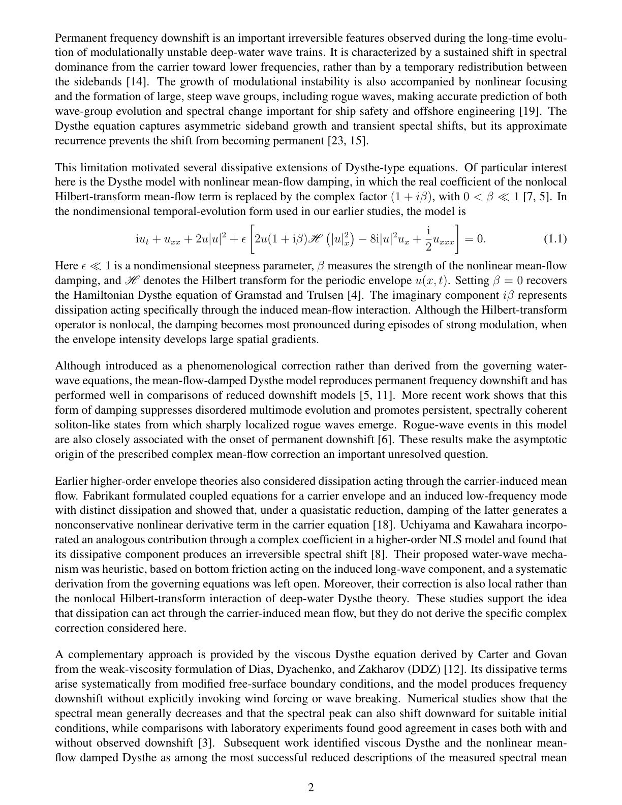
<figcaption class="paper-figure-caption"><b>Fig 1.</b> Low-resolution page preview, page 2</figcaption>
</figure>
<figure class="paper-figure-card">

<figcaption class="paper-figure-caption"><b>Fig 2.</b> Low-resolution page preview, page 3</figcaption>
</figure>
<figure class="paper-figure-card">
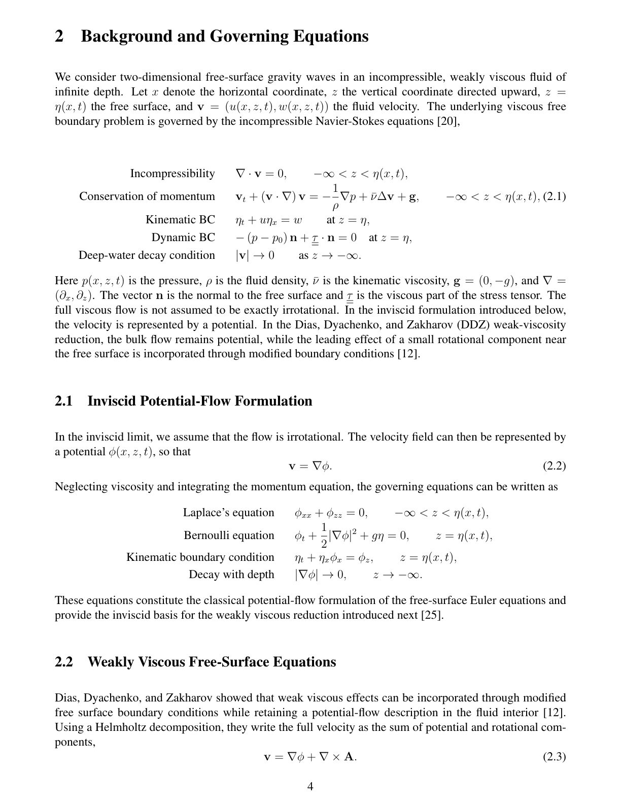
<figcaption class="paper-figure-caption"><b>Fig 3.</b> Low-resolution page preview, page 4</figcaption>
</figure>
<figure class="paper-figure-card">
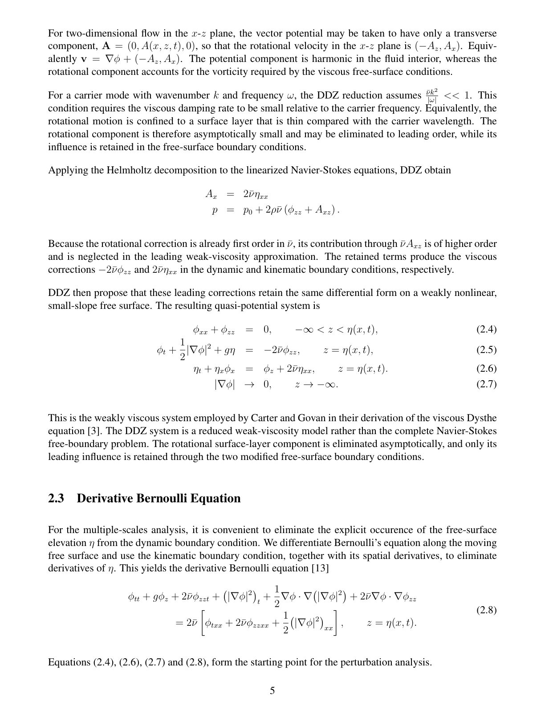
<figcaption class="paper-figure-caption"><b>Fig 4.</b> Low-resolution page preview, page 5</figcaption>
</figure>
<figure class="paper-figure-card">
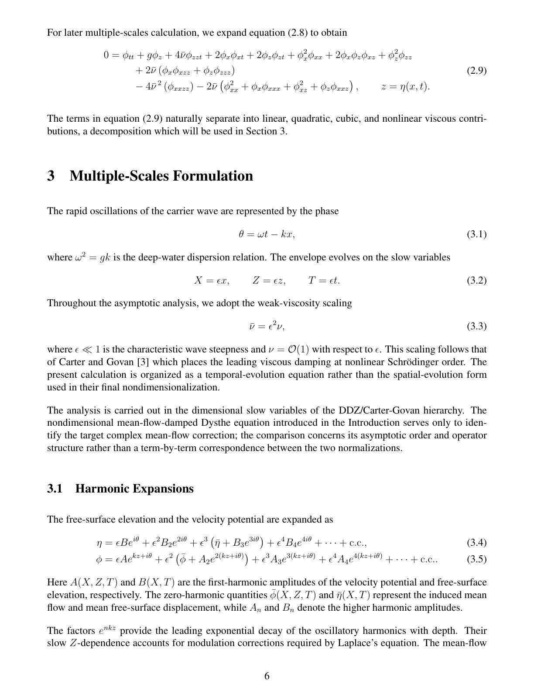
<figcaption class="paper-figure-caption"><b>Fig 5.</b> Low-resolution page preview, page 6</figcaption>
</figure>
</div>

<p><strong>Summary.</strong> This paper analyzes wave damping in weakly viscous deep-water waves by extending the Dysthe theory using multiple-scales analysis. The authors compare the results from this rigorous fluid dynamics framework against an independent phase-lag model for mean-flow interaction. They conclude that while higher orders reveal specific coupling terms, the predicted frequency-dependent damping correction arises naturally only in the simplified time-adjustment model, suggesting a gap between the two theoretical approaches.</p>
<p><strong>Why it may be interesting.</strong> Although focused on fluid dynamics, the mathematical techniques—such as multi-scale analysis, deriving higher-order nonlinear evolution equations, and modeling delayed feedback via relaxation kernels—are highly relevant to open quantum systems where memory effects or non-Markovian damping are crucial.</p>
<details>
<summary>Detailed structure</summary>
<p><strong>Main problem.</strong> The authors investigate extending weakly viscous Dysthe wave theory by determining if the standard weak-viscosity framework can systematically generate a complex multiplier associated with nonlinear mean-flow damping.</p>
<p><strong>Main result.</strong> They show that while higher-order analysis reveals specific direct viscous contributions at sixth order, an independent finite-adjustment-time model predicts a phase-lag correction entering at fifth order, suggesting the systematic origin of this effect is not guaranteed by the standard weak-viscosity reduction.</p>
<p><strong>Method.</strong> The work employs multiple-scales perturbation analysis on the Navier-Stokes equations, extending the Dias-Dyachenko-Zakharov (DDZ) framework, and independently utilizes a finite-adjustment-time model for mean-flow response.</p>
<p><strong>Model / system.</strong> The system is two-dimensional free-surface gravity waves in an incompressible, weakly viscous fluid of infinite depth. The analysis builds upon the DDZ weak-viscosity reduction of the full Navier-Stokes equations.</p>
<p><strong>Key observables.</strong> Nonlocal mean-flow interaction terms ($\mathcal{A}c_M$), the complex multiplier $(1 + ieta)$, and the effective frequency-dependent damping coefficient $eta_{	ext{eff}}(\Omega) = \Omega	au$.</p>
<p><strong>Important parameters / regimes.</strong> Weak-viscosity scaling ($ar{
u} = \epsilon^2
u$) and the small parameter $\epsilon$ (wave steepness). The adjustment time $ au$ is a key parameter in the phase-lag model.</p>
<p><strong>Assumptions / limitations.</strong> The DDZ reduction assumes potential flow supplemented by boundary condition modifications; the phase-lag model treats mean-flow relaxation as an independent, reduced dynamics problem.</p>
<p><strong>Paper structure.</strong> The paper progresses from establishing the physical system and the leading Dysthe theory (DDZ reduction) to performing high-order perturbation analysis (fifth and sixth order solvability conditions), culminating in a comparison between these results and an independent, exact phase-lag model.</p>
</details>
<details>
<summary>Abstract</summary>
<p>We extend the Carter-Govan multiple-scales analysis of weakly viscous, narrowband deep-water wave packets beyond Dysthe order within the potential-flow reduction of Dias, Dyachenko, and Zakharov (DDZ). We seek to determine whether this framework generates the complex multiplier $(1 + iβ)$ used phenomenologically to modify the nonlocal Dysthe mean-flow interaction. Although order counting places a direct viscous carrier-mean interaction at sixth order, it does not exclude an indirect fifth-order contribution arising from viscosity dependent lower-order harmonics and nonlinear interactions. We therefore derive the first correction to the induced mean flow and the complete fifth-order first-harmonic solvability condition. The resulting nonlocal terms are derivative--dependent and contain no explicit viscosity, excluding the proposed indirect mechanism within the DDZ framework. At sixth order, a restricted calculation of the nonlinear viscous block isolates a direct carrier-mean contribution with the same operator structure as the imaginary component of the prescribed mean-flow correction. Independently, a finite-adjustment-time model yields an exact, frequency dependent mean-flow response. Its low-frequency expansion produces the multiplier $ 1 + iβ_{\mathrm{eff}}(Ω)$, with $β_{\mathrm{eff}}(Ω) =Ωτ.$ When $Ωτ= \mathcal O(ε)$, the resulting phase-lag correction enters at fifth order, one order beyond the leading Dysthe mean-flow interaction.</p>
</details>
<p><sub><a href="#top">↑ back to top</a></sub></p>

<p><a id="paper-2608.04508"></a></p>
<h3 id="microscopic-theory-of-the-field-induced-instability-of-the-vortex-free-state-in-superconducting-thin-film-strips"><a href="http://arxiv.org/abs/2608.04508v1">Microscopic theory of the field-induced instability of the vortex-free state in superconducting thin-film strips</a></h3>
<p><strong>Authors:</strong> Takayuki Kubo<br>
<strong>Type:</strong> theory · <strong>Category:</strong> other · <strong>PDF:</strong> <a href="https://arxiv.org/pdf/2608.04508v1">https://arxiv.org/pdf/2608.04508v1</a><br>
<strong>Analysis basis:</strong> full PDF text, analyzed in chunks
<strong>Topic relevance:</strong> <code>Keldysh / 2PI / non-Gaussian methods</code> <strong>3/5</strong> · <code>driven-dissipative phase transition</code> <strong>3/5</strong> · <code>non-equilibrium universality</code> <strong>2/5</strong> · <code>analog quantum simulation</code> <strong>1/5</strong> · <code>correlated / nonlocal dissipation</code> <strong>1/5</strong> · <code>methods for driven-dissipative</code> <strong>1/5</strong> · <code>non-equilibrium dynamics</code> <strong>1/5</strong></p>
<div class="figure-strip-hint">↔ Scroll figures horizontally</div>
<div class="paper-figures-scroll">
<figure class="paper-figure-card">
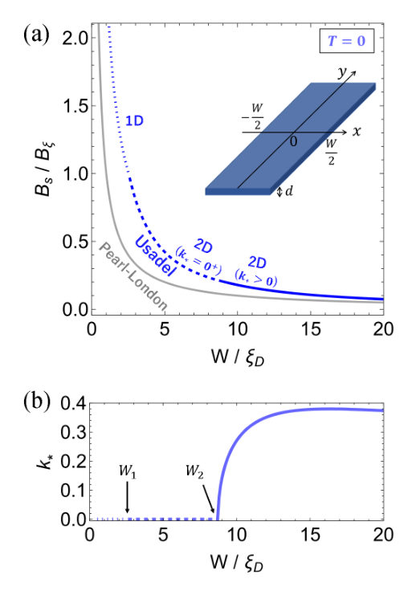
<figcaption class="paper-figure-caption"><b>Fig 1.</b> FIG. 1. (a) The instability field Bs as a function of the strip width W at T = 0. The dotted, dashed, and solid seg- ments indicate the regimes in which Bs is determined by the 1D, 2D long-wavelength, and finite-wave-number instabilities, respectively. The gray curve shows the naive Pearl–London result B(L) s /Bξ = 1/w, obtained by setting ξcut = ξD. The inset shows the strip geometry. (b) Critical longitudinal wave number in the 2D sector. The solid segment shows the finite- wave-number regime with k∗&gt; 0. The dashed segment at k∗= 0 denotes the long-wavelength limit k →0+ with u0 ̸= 0, whereas the dotted segment at zero indicates the 1D regime, in which no 2D wave number determines Bs.</figcaption>
</figure>
<figure class="paper-figure-card">
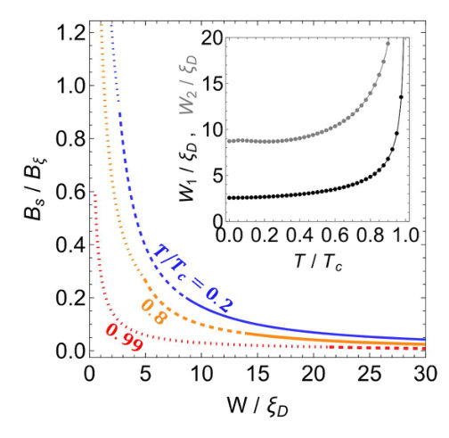
<figcaption class="paper-figure-caption"><b>Fig 2.</b> FIG. 2. The instability field Bs as a function of the strip width W for T/Tc = 0.2, 0.8, and 0.99. The dotted, dashed, and solid segments indicate the regimes in which Bs is deter- mined by the 1D, 2D long-wavelength, and 2D finite-wave- number instabilities, respectively. The inset shows the tem- perature dependence of the crossover widths w1 = W1/ξD and w2 = W2/ξD. The black and gray curves are fits to w1 and w2, respectively: w1(t) = (2.563 + 4.63t −0.125t2)/[(1 + 2.314t)√1 −t] and w2(t) = P[7t/(1 + 7t)]/√1 −t, where P(x) = 8.73 −1.45x + 10.60x2 −37.20x3 + 42.35x4 −18.46x5</figcaption>
</figure>
<figure class="paper-figure-card">
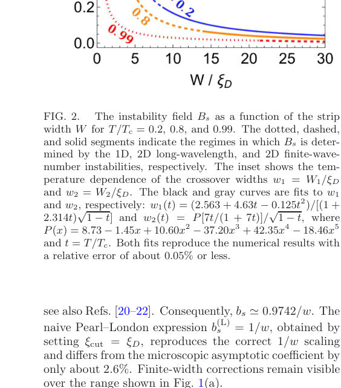
<figcaption class="paper-figure-caption"><b>Fig 3.</b> Figure 2 shows the width dependence of Bs at finite temperatures. Since ξD is temperature independent, the dimensionless width w = W/ξD of a given strip is fixed. Both crossover widths increase with temperature because the characteristic length scale of the superconducting re- sponse grows as T approaches Tc. Near Tc, this increase can be attributed to the divergence of ξGL(T ). The inset</figcaption>
</figure>
</div>

<p><strong>Summary.</strong> This paper develops a microscopic theory to accurately predict when a vortex-free superconducting thin film becomes unstable due to an applied magnetic field. By formulating the stability problem directly, it resolves ambiguities present in older models and maps out three distinct physical regimes based on the strip's width relative to characteristic lengths. The work is significant for understanding superconductivity in confined geometries.</p>
<p><strong>Why it may be interesting.</strong> While focused on superconductivity, the rigorous stability analysis of a macroscopic quantum state (the superconducting order parameter) under external fields provides valuable techniques for analyzing phase transitions in complex many-body systems relevant to open quantum systems.</p>
<details>
<summary>Detailed structure</summary>
<p><strong>Main problem.</strong> To microscopically determine the field-induced instability of the vortex-free state in superconducting thin-film strips, overcoming ambiguities found in older theories.</p>
<p><strong>Main result.</strong> The theory establishes three distinct width regimes for instability: 1D instability, edge-selective 2D mode instability, and localized modes. It shows that for narrow strips, the classical Pearl–London picture fails qualitatively.</p>
<p><strong>Method.</strong> Stability is analyzed by examining the quadratic variation of the Gibbs free energy functional using Usadel theory formalism, considering both 1D and 2D perturbations.</p>
<p><strong>Model / system.</strong> The system modeled is a homogeneous dirty superconducting thin-film strip subjected to a perpendicular magnetic field. The analysis uses theoretical tools derived from superconductivity theory (Usadel equations).</p>
<p><strong>Key observables.</strong> Instability field ($B_s$), critical wave number ($k^*$), and the order parameter amplitude.</p>
<p><strong>Important parameters / regimes.</strong> Strip width ($W$), temperature ($T$), and magnetic field strength ($B$). The analysis identifies crossover widths $W_1(T)$ and $W_2(T)$.</p>
<p><strong>Assumptions / limitations.</strong> The calculations assume a homogeneous strip, negligible self-field effects, and no applied transport current.</p>
<p><strong>Figures summary.</strong> Figure 1 illustrates the width dependence of $B_s$ at $T=0$, marking the three instability regimes. Figure 2 shows how these critical fields change with temperature.</p>
<p><strong>Paper structure.</strong> The paper develops the stability analysis by first considering 1D perturbations, then extending to 2D modes using Fourier decomposition for longitudinal wave numbers ($k$). The results are synthesized to define $B_s$ as the minimum instability field across all considered modes and regimes.</p>
</details>
<details>
<summary>Abstract</summary>
<p>In the Pearl--London theory, the edge-barrier-disappearance field of a superconducting thin-film strip depends on an arbitrary short-distance core cutoff because the vortex is treated as a point object. The theory does not determine the cutoff or how it depends on temperature $T$, and therefore cannot determine the $T$ dependence of the instability field. Here we formulate the microscopic stability problem directly for the vortex-free superconducting state. This removes the core-cutoff ambiguity and determines the instability field $B_s$ over the full temperature range and across all width regimes considered here. For a homogeneous dirty strip with negligible self-field, three width regimes occur. For $W<W_1(T)$, superconductivity disappears continuously into the normal state through a one-dimensional (1D) instability. For $W_1(T)<W<W_2(T)$, an edge-selective two-dimensional (2D) long-wavelength mode becomes unstable. For $W>W_2(T)$, the critical wave number is finite and the unstable mode is localized near an edge. In the wide-strip limit, $B_s\propto1/W$, recovering the Pearl--London scaling. In sufficiently narrow strips, however, the Pearl--London edge-barrier picture fails qualitatively.</p>
</details>
<p><sub><a href="#top">↑ back to top</a></sub></p>

<p><a id="paper-2608.04986"></a></p>
<h3 id="magnetic-catalysis-and-hall-conductivity-of-excitonic-insulators-in-a-planar-four-fermi-model"><a href="http://arxiv.org/abs/2608.04986v1">Magnetic catalysis and Hall conductivity of excitonic insulators in a planar four-Fermi model</a></h3>
<p><strong>Authors:</strong> William R. Tavares, Rudnei O. Ramos, Nei Lopes<br>
<strong>Type:</strong> theory · <strong>Category:</strong> strongly correlated electrons · <strong>PDF:</strong> <a href="https://arxiv.org/pdf/2608.04986v1">https://arxiv.org/pdf/2608.04986v1</a><br>
<strong>Analysis basis:</strong> full PDF text, analyzed in chunks
<strong>Topic relevance:</strong> <code>Keldysh / 2PI / non-Gaussian methods</code> <strong>3/5</strong> · <code>analog quantum simulation</code> <strong>2/5</strong> · <code>correlated cavity matter</code> <strong>1/5</strong> · <code>driven-dissipative phase transition</code> <strong>1/5</strong> · <code>methods for driven-dissipative</code> <strong>1/5</strong></p>
<div class="figure-strip-hint">↔ Scroll figures horizontally</div>
<div class="paper-figures-scroll">
<figure class="paper-figure-card">
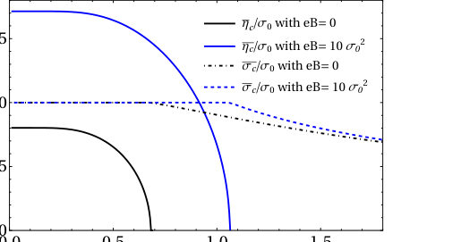
<figcaption class="paper-figure-caption"><b>Fig 1.</b> FIG. 1. Normalized EI condensate (solid curves) and scalar con- densate (dashed curves) as functions of temperature for 𝑒𝐵= 0 and 𝑒𝐵= 10𝜎2 0 , with 𝑀= 0.24𝜎0. The magnetic field enhances the EI gap and raises its continuous transition temperature. The scalar con- densate remains equal to 𝜎0 while ¯𝜂𝑐≠0 and becomes temperature dependent only in the non-EI phase.</figcaption>
</figure>
<figure class="paper-figure-card">

<figcaption class="paper-figure-caption"><b>Fig 2.</b> Figure 1 shows the temperature dependence of the two con- densates for 𝑀= 0.24𝜎0. At 𝐵= 0 and𝑇= 0, the equilibrium solution has ¯𝜂𝑐≃0.8𝜎0 and ¯𝜎𝑐= 𝜎0. The finite value of ¯𝜎𝑐should not be interpreted as an independent spontaneous transition in the present semiconductor regime, because the explicit mass parameter already breaks the corresponding chi- ral symmetry. The genuine EI order is identified by ¯𝜂𝑐≠0. As the temperature increases, the EI condensate decreases contin- uously and vanishes at</figcaption>
</figure>
<figure class="paper-figure-card">
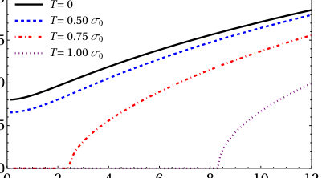
<figcaption class="paper-figure-caption"><b>Fig 3.</b> FIG. 3. Normalized EI condensate as a function of the perpendicular magnetic field for several temperatures, with 𝑀= 0.24𝜎0. The monotonic enhancement of ¯𝜂𝑐is the excitonic analogue of magnetic catalysis. At temperatures above the zero-field critical temperature, a sufficiently strong field induces the EI phase.</figcaption>
</figure>
<figure class="paper-figure-card">
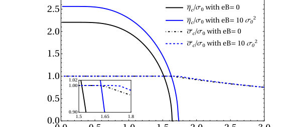
<figcaption class="paper-figure-caption"><b>Fig 4.</b> FIG. 2. Normalized EI condensate (solid curves) and scalar conden- sate (dashed curves) as functions of temperature for 𝑀= 0.15𝜎0, at 𝑒𝐵= 0 and 𝑒𝐵= 10𝜎2 0 . The smaller bare gap favors the EI phase, while the magnetic field further increases the condensate and its critical temperature. The inset enlarges the behavior of the scalar condensate near the EI transition.</figcaption>
</figure>
<figure class="paper-figure-card">
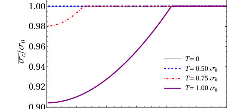
<figcaption class="paper-figure-caption"><b>Fig 5.</b> FIG. 4. Normalized scalar condensate as a function of the perpendic- ular magnetic field for several temperatures. In the EI phase, ¯𝜎𝑐= 𝜎0 and is independent of 𝐵. Above the zero-field EI transition, the scalar condensate initially exhibits magnetic catalysis; it becomes pinned to 𝜎0 when the field-induced EI condensate appears.</figcaption>
</figure>
</div>

<p><strong>Summary.</strong> This paper theoretically examines the effect of a magnetic field on an excitonic insulator phase using a four-Fermi model. It finds that the magnetic field enhances the excitonic order parameter, demonstrating a form of magnetic catalysis. Furthermore, it predicts characteristic changes in the Hall conductivity that serve as complementary signatures for detecting this type of electronic ordering.</p>
<p><strong>Why it may be interesting.</strong> While focused on condensed matter theory, the study of emergent collective phases like excitonic insulators under external fields provides insights into many-body ground states that are relevant to strongly correlated systems.</p>
<details>
<summary>Detailed structure</summary>
<p><strong>Main problem.</strong> The study investigates how a perpendicular magnetic field affects the excitonic insulator (EI) phase and its associated Hall conductivity in planar fermionic systems.</p>
<p><strong>Main result.</strong> The magnetic field induces an 'excitonic realization of magnetic catalysis' by enhancing the EI condensate, while the Hall conductivity exhibits characteristic changes accompanying this ordering transition.</p>
<p><strong>Method.</strong> The analysis employs the large-$N$ approximation within a mean-field framework to derive and minimize the thermodynamic potential for coupled scalar and excitonic condensates.</p>
<p><strong>Model / system.</strong> The system is modeled using an extended planar four-Fermi model (extended Gross-Neveu model) describing electron-hole coherence interactions in the semiconductor regime. The Hamiltonian incorporates minimal coupling to a perpendicular magnetic field.</p>
<p><strong>Key observables.</strong> EI condensate ($\eta_c$), critical temperature ($T_c$), Hall conductivity ($\sigma_{xy}$), and phase structure changes (e.g., tricritical point).</p>
<p><strong>Important parameters / regimes.</strong> Perpendicular magnetic field ($B$), finite temperature ($T$), and chemical potential ($\mu$).</p>
<p><strong>Assumptions / limitations.</strong> The analysis relies on the large-$N$ approximation and treats the system using a homogeneous saddle-point mean-field approach, neglecting collective phase fluctuations.</p>
<p><strong>Figures summary.</strong> Not specified by notes; the text describes analyzing field dependence of condensates and Hall conductivity near transitions.</p>
<p><strong>Paper structure.</strong> The paper systematically introduces the model (Section II), derives the thermodynamic potential in zero field, establishes gap equations for equilibrium condensates, and then extends this framework to incorporate a perpendicular magnetic field (Section III).</p>
</details>
<details>
<summary>Abstract</summary>
<p>We study the effects of a perpendicular magnetic field on the excitonic insulator (EI) phase in the semiconductor regime using an extended planar four-Fermi model. Within the large-$N$ approximation, we determine the coupled scalar and excitonic condensates at finite temperature, chemical potential, and magnetic field. The field enhances the EI condensate and raises its critical temperature, providing an excitonic realization of magnetic catalysis, while the scalar condensate remains constant throughout the EI phase. By contrast, the critical chemical potential depends nonmonotonically on the field because of the successive occupation of Landau levels. The magnetic field also shifts the mean-field tricritical point and enlarges the first-order region of the temperature--chemical-potential phase diagram. We further analyze the Hall conductivity and find that increasing the field reduces the number of plateaus and modifies the threshold for a finite Hall response. For the parameters considered, the emergence of the EI condensate is accompanied by a characteristic change in the Hall conductivity, including a field-dependent change of slope near a continuous transition. These results show that the combined phase structure and Hall response can provide complementary signatures of excitonic ordering in planar fermionic systems.</p>
</details>
<p><sub><a href="#top">↑ back to top</a></sub></p>

<p><a id="paper-2608.04875"></a></p>
<h3 id="large-nonlinear-hall-effect-in-strained-moire-structures-hosting-high-pseudospin-fermions"><a href="http://arxiv.org/abs/2608.04875v1">Large nonlinear Hall effect in strained moiré structures hosting high-pseudospin fermions</a></h3>
<p><strong>Authors:</strong> Srijata Lahiri, Gourab Paul, Bilal Tanatar, Saurabh Basu<br>
<strong>Type:</strong> theory · <strong>Category:</strong> other · <strong>PDF:</strong> <a href="https://arxiv.org/pdf/2608.04875v1">https://arxiv.org/pdf/2608.04875v1</a><br>
<strong>Analysis basis:</strong> full PDF text, analyzed in chunks
<strong>Topic relevance:</strong> <code>analog quantum simulation</code> <strong>3/5</strong> · <code>driven-dissipative phase transition</code> <strong>2/5</strong> · <code>Keldysh / 2PI / non-Gaussian methods</code> <strong>1/5</strong> · <code>spintronics-quantum-optics interface</code> <strong>1/5</strong></p>
<div class="figure-strip-hint">↔ Scroll figures horizontally</div>
<div class="paper-figures-scroll">
<figure class="paper-figure-card">
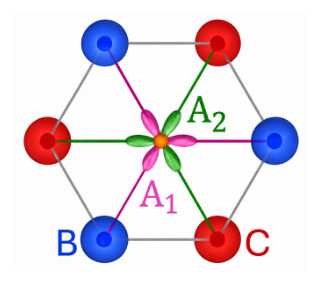
<figcaption class="paper-figure-caption"><b>Fig 1.</b> FIG. 1. Schematic illustration of the WM lattice. The NN hopping between the B and C orbitals is represented by gray bonds, whereas the NN hopping between the A1–B and A2–C orbitals is highlighted by pink and green bonds, respectively.</figcaption>
</figure>
<figure class="paper-figure-card">
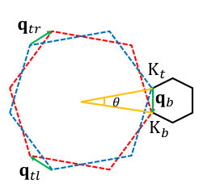
<figcaption class="paper-figure-caption"><b>Fig 2.</b> FIG. 2. Momentum space structure of twisted bilayer WM lattice. The dashed blue and red hexagons correspond to the Brillouin zones of the top and bottom WM lattice. The small black hexagon denotes the MBZ generated by the relative rotation θ between the two layers. The vectors qb, qtr, and qtl represent the three momentum transfer vectors that couple the electronic states between the two layers.</figcaption>
</figure>
<figure class="paper-figure-card">
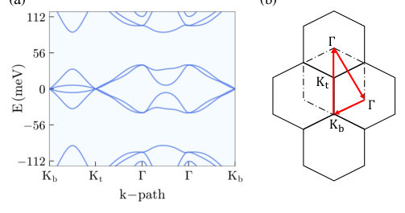
<figcaption class="paper-figure-caption"><b>Fig 3.</b> FIG. 3. (a) Band structure of the twisted bilayer WM lattice around K+ valley at a twist angle of θ = 1.40○in the chiral limit of the system. (b) High-symmetry path in the MBZ.</figcaption>
</figure>
<figure class="paper-figure-card">
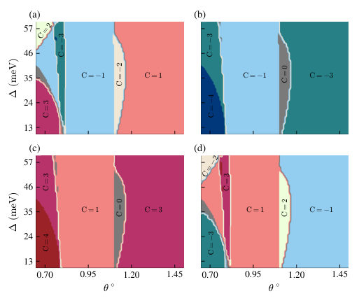
<figcaption class="paper-figure-caption"><b>Fig 4.</b> FIG. 5. Unstrained Chern phase diagrams corresponding to the four isolated nondegenerate subbands close to the charge neutrality. Panels (a)–(d) correspond to band indices n = 322, 323, 324, and 325, respectively, and illustrate the evolution of the Chern number as a function of onsite parameter ∆and twist angle θ.</figcaption>
</figure>
<figure class="paper-figure-card">

<figcaption class="paper-figure-caption"><b>Fig 5.</b> FIG. 4. Band structure of the twisted bilayer WM lattice around the K+ valley in the presence of an onsite mass (∆= 38 meV), calculated at a twist angle of θ = 1.40○in the chiral limit of the system along the high-symmetry path shown in Fig. 3(b).</figcaption>
</figure>
</div>

<p><strong>Summary.</strong> This paper theoretically investigates the nonlinear Hall effect in strained moiré watermill lattices containing high-pseudospin fermions. By introducing strain, the authors activate a Berry curvature dipole that drives a large, tunable nonlinear response. This work demonstrates how geometric properties of the lattice can be engineered to yield enhanced topological transport signatures.</p>
<p><strong>Why it may be interesting.</strong> While focused on condensed matter topology, the concept of engineering geometric responses (like the BCD) through external fields (strain) mirrors control mechanisms used in quantum optics or AMO physics to tune system Hamiltonians and induce novel collective states.</p>
<details>
<summary>Detailed structure</summary>
<p><strong>Main problem.</strong> The study investigates the linear and nonlinear Hall response, particularly focusing on how strain engineering can activate a finite Berry curvature dipole in moiré structures hosting high-pseudospin fermions.</p>
<p><strong>Main result.</strong> The system exhibits a large nonlinear Hall effect whose magnitude substantially exceeds that of symmetry-broken transition metal dichalcogenides. The sign reversal of the Berry curvature dipole across topological phase boundaries creates characteristic 'butterfly like features'.</p>
<p><strong>Method.</strong> Theoretical analysis using continuum models (Bistritzer-MacDonald formalism) to map out phase diagrams based on mass strength and twist angle, followed by incorporating strain effects.</p>
<p><strong>Model / system.</strong> The model is a moiré watermill lattice (WM), treated as a four-band manifold hosting high-pseudospin fermions. The Hamiltonian incorporates intralayer hopping terms and interlayer coupling, which are then modified by an inversion symmetry breaking mass term ($\Delta$) and uniaxial strain ($\epsilon_p$).</p>
<p><strong>Key observables.</strong> Nonlinear Hall response (NLHE), Chern numbers ($C$), Berry curvature dipole (BCD).</p>
<p><strong>Important parameters / regimes.</strong> Twist angle ($  heta$), onsite mass strength ($\Delta$), and applied strain ($\epsilon_p$).</p>
<p><strong>Assumptions / limitations.</strong> The analysis assumes only nearest-neighbor hopping processes are dominant, and the system is analyzed in the context of a four-band model.</p>
<p><strong>Figures summary.</strong> Figure 1 schematically illustrates the WM lattice structure with its various hopping bonds. The paper analyzes phase diagrams showing Chern number evolution and BCD dependence on strain/mass.</p>
<p><strong>Paper structure.</strong> The work proceeds by first establishing the low-energy physics of the moiré watermill lattice, mapping out topological phases via Chern numbers using mass terms. Subsequently, uniaxial strain is introduced to break residual symmetries, activating a finite Berry curvature dipole responsible for the nonlinear Hall response.</p>
</details>
<details>
<summary>Abstract</summary>
<p>We investigate the linear and nonlinear Hall response of a moiré \emph{watermill lattice}, in which stacking and twisting generate a four-band manifold near the Fermi level with suppressed group velocities at discrete magic angles. Including an inversion symmetry breaking onsite mass breaks the interlayer symmetry, opening a gap in this manifold and driving the system into a non-trivial bulk topological phase. We map the resulting phase diagram as a function of the strength of the mass and twist angle $θ$, revealing several sectors with high Chern numbers. We then introduce strain to break the residual $C_3$ symmetry of the lattice which activates a finite Berry curvature dipole and correspondingly, a nonlinear Hall response. The dipole reverses sign sharply across topological phase boundaries, producing butterfly like features when plotted against the relevant system parameters. Its magnitude substantially exceeds that reported for symmetry-broken transition metal dichalcogenides, consistent with the elevated Wilson-loop winding and enhanced quantum geometry associated with the lattice's pseudospin-$3/2$ character. We conclude by incorporating thermal effects on the Berry curvature dipole, asserting that it is an important tool for discerning topology at low temperatures.</p>
</details>
<p><sub><a href="#top">↑ back to top</a></sub></p>

<p><a id="paper-2608.04221"></a></p>
<h3 id="analysis-of-nonlinear-phase-noise-in-coherent-fiber-optic-systems-based-on-phase-shift-keying"><a href="http://arxiv.org/abs/2608.04221v1">Analysis of Nonlinear Phase Noise in Coherent Fiber-Optic Systems Based on Phase Shift Keying</a></h3>
<p><strong>Authors:</strong> Shiva Kumar<br>
<strong>Type:</strong> theory · <strong>Category:</strong> other · <strong>PDF:</strong> <a href="https://arxiv.org/pdf/2608.04221v1">https://arxiv.org/pdf/2608.04221v1</a><br>
<strong>Analysis basis:</strong> full PDF text, analyzed in chunks
<strong>Topic relevance:</strong> <code>Keldysh / 2PI / non-Gaussian methods</code> <strong>2/5</strong> · <code>methods for driven-dissipative</code> <strong>2/5</strong> · <code>analog quantum simulation</code> <strong>1/5</strong> · <code>correlated / nonlocal dissipation</code> <strong>1/5</strong> · <code>driven-dissipative phase transition</code> <strong>1/5</strong> · <code>interference shaping light</code> <strong>1/5</strong> · <code>non-equilibrium dynamics</code> <strong>1/5</strong></p>
<div class="figure-strip-hint">↔ Scroll figures horizontally</div>
<div class="paper-figures-scroll">
<figure class="paper-figure-card">

<figcaption class="paper-figure-caption"><b>Fig 1.</b> Fig. 1. Phase variance dependence on the total length of the transmission line. Peak launch power = 2 mW. Solid line and + marks show the analytical and numerical simulation results, respectively. The dotted line shows the analytical results when fiber nonlinearity is absent, which is independent of dispersion. DOF = 14 is used for analytical results.</figcaption>
</figure>
<figure class="paper-figure-card">

<figcaption class="paper-figure-caption"><b>Fig 2.</b> Fig. 2. Dependence of variance on the DOFs with a matched filter. Dotted line, circles, +, and solid line show the analytical results with DOF 2, 6, 10, and 14, respectively. Other parameters are same as that of Fig. 1.</figcaption>
</figure>
<figure class="paper-figure-card">

<figcaption class="paper-figure-caption"><b>Fig 3.</b> Fig. 4. Dependence of phase variance on peak launch power. Matched filter is used. Solid and + show the analytical and numerical simulation results, respectively. Ltot = 2400 km and |D| = 4 ps/nm · km. DOF = 14 is used for analytical results.</figcaption>
</figure>
<figure class="paper-figure-card">

<figcaption class="paper-figure-caption"><b>Fig 4.</b> Fig. 3. Dependence of variance on the DOFs with a Gaussian filter with f0 = 42.38 GHz. Dotted line, circles, +, and solid line show the analytical results with DOF 2, 6, 10, and 14, respectively. Other parameters are same as that of Fig. 1.</figcaption>
</figure>
<figure class="paper-figure-card">

<figcaption class="paper-figure-caption"><b>Fig 5.</b> Fig. 5. Dependence of gfr(L1) on the average dispersion, Dav and the local dispersion, D1. Matched filter is used. Total transmission distance, Ltr (excluding pre- and post-compensation fiber) = 2400 km, peak power = 2 mW, location of the first inline amplifier, L1 = 0.5DavLtr/Dpre and DOF = 14.</figcaption>
</figure>
</div>

<p><strong>Summary.</strong> This paper develops advanced analytical techniques to quantify nonlinear phase noise in high-speed optical communication links. By expanding the noise field using Gauss-Hermite functions up to arbitrary degrees of freedom, it provides a more accurate model than previous works. The results yield an optimum launch power that minimizes overall signal degradation due to both linear and nonlinear effects.</p>
<p><strong>Why it may be interesting.</strong> While focused on classical communication systems, the mathematical framework—using orthogonal function expansions (Gauss-Hermite) to model complex noise accumulation in a nonlinear wave equation—shares conceptual parallels with analyzing quantum noise or decoherence channels in open quantum systems.</p>
<details>
<summary>Detailed structure</summary>
<p><strong>Main problem.</strong> The paper analyzes nonlinear phase noise accumulation in coherent fiber-optic communication systems utilizing Phase Shift Keying (PSK). It aims to provide accurate analytical expressions for the phase variance by accounting for higher-order noise modes.</p>
<p><strong>Main result.</strong> The inclusion of arbitrary degrees of freedom (DOFs) significantly improves the accuracy over previous two-DOF models, and an optimum launch power can be derived by balancing linear and nonlinear noise contributions.</p>
<p><strong>Method.</strong> The analysis uses a perturbation expansion approach on the Nonlinear Schrödinger equation, representing the noise field using Gauss-Hermite functions as an orthogonal basis set.</p>
<p><strong>Model / system.</strong> The system is modeled as an amplified optical link governed by the NLS equation, where noise arises from Amplified Spontaneous Emission (ASE) at discrete amplifier locations. The analysis extends beyond simple two-DOF approximations to arbitrary DOFs.</p>
<p><strong>Key observables.</strong> Phase variance ($\langle\delta\phi^2
angle$), optimum launch power ($P_{opt}$), and Bit Error Rate (BER).</p>
<p><strong>Important parameters / regimes.</strong> Dispersion profile ($eta_2(z)$), nonlinear coefficient ($\gamma$), number of amplifiers ($N_a$), and the number of degrees of freedom (DOFs).</p>
<p><strong>Assumptions / limitations.</strong> The analysis relies on a pseudo-linear regime where nonlinearity is treated as a first-order perturbation, and it assumes signal power is much greater than mean ASE power.</p>
<p><strong>Figures summary.</strong> Figures illustrate the dependence of phase variance on the number of DOFs (matched vs. Gaussian filters) and show how variance changes with total length or launch power for specific dispersion parameters.</p>
<p><strong>Paper structure.</strong> The paper develops analytical expressions by expanding the noise field using Gauss-Hermite functions, deriving formulas for the phase variance considering arbitrary DOFs, and finally determining the optimum launch power that minimizes this accumulated noise.</p>
</details>
<details>
<summary>Abstract</summary>
<p>Analytical expressions for the phase variance in a nonlinear fiber optic system based on phase-shift keying are developed. The Gauss-Hermite functions are used as the orthogonal basis to represent the noise field. Number of degrees of freedom (DOF) to accurately model the phase variance is estimated. The amplifier noise excites higher order Gauss-Hermite noise modes and the nonlinear mixing of a signal pulse and higher order Gauss-Hermite noise mode leads to new noise fields which enhance the nonlinear phase noise. The higher order noise modes propagate linearly and enhance the linear phase noise if the matched filter is not used at the receiver. Analytical expression for the optimum launch power is developed taking into account the linear and nonlinear phase noise.</p>
</details>
<p><sub><a href="#top">↑ back to top</a></sub></p>

<p><a id="paper-2608.04856"></a></p>
<h3 id="high-speed-time-series-prediction-using-compact-memristor-circuits-with-adjustable-dynamics"><a href="http://arxiv.org/abs/2608.04856v1">High-speed time-series prediction using compact memristor circuits with adjustable dynamics</a></h3>
<p><strong>Authors:</strong> Dániel Molnár, János Volk, Tímea Nóra Török, Zoltán Balogh, Nadia Jimenez Olalla, Miklós Csontos, Juerg Leuthold, András Halbritter<br>
<strong>Type:</strong> experiment · <strong>Category:</strong> disordered systems and neural networks · <strong>PDF:</strong> <a href="https://arxiv.org/pdf/2608.04856v1">https://arxiv.org/pdf/2608.04856v1</a><br>
<strong>Analysis basis:</strong> full PDF text, analyzed in chunks
<strong>Topic relevance:</strong> <code>driven-dissipative phase transition</code> <strong>2/5</strong> · <code>analog quantum simulation</code> <strong>1/5</strong> · <code>correlated / nonlocal dissipation</code> <strong>1/5</strong> · <code>methods for driven-dissipative</code> <strong>1/5</strong> · <code>non-equilibrium dynamics</code> <strong>1/5</strong> · <code>non-equilibrium universality</code> <strong>1/5</strong> · <code>spintronics-quantum-optics interface</code> <strong>1/5</strong></p>
<div class="figure-strip-hint">↔ Scroll figures horizontally</div>
<div class="paper-figures-scroll">
<figure class="paper-figure-card">

<figcaption class="paper-figure-caption"><b>Fig 1.</b> FIG. 1: The concept of our work. Instead of using complex neural networks with feedback connections (a1), or black-box-like dynamical reservoir computing layers (a2), we apply a compact memristive dynamical reservoir computing layer (a3) to perform time-series prediction tasks. A key feature of our approach is that we can tune the forgetting times of individual memristive chan- nels independently (gray arrows in a3). (b) The tunable forgetting times are enabled by the exponential dependence of the switching time on the applied voltage. The gray curve reproduces a trendline from the literature for Ta2O5 memristors,[42] spanning over 15 or- ders of magnitude in the time-domain, and further...</figcaption>
</figure>
<figure class="paper-figure-card">

<figcaption class="paper-figure-caption"><b>Fig 2.</b> FIG. 2: Illustration of the time series prediction scheme. Three mathematical dynamical systems (NARX, NARMA2, DYN3) are tested as benchmark tasks, all producing an y(k) out- put stream in response to a random u(k) input. This random input stream is encoded in the amplitudes of the positive programming pulses (Vin,i(k)), which are fed to the inputs of the various mem- ristive channels, each consisting of one memristor and one resistor in series. Forgetting is achieved by negative offset pulses (Voffset,i), which are independent of k, but are different for the different chan- nels (i). The dynamical response of the of the memristors is read out as the Vout,i(k) voltage on the series...</figcaption>
</figure>
<figure class="paper-figure-card">

<figcaption class="paper-figure-caption"><b>Fig 3.</b> FIG. 3: The results of the time series prediction tasks using the NARX (a1,a2,a3), the NARMA2 (b1,b2,b3) and the DYN3 (c1,c2,c3) dynamical systems. In Approach I (a1,b1,c1) 6 memristive channels are applied, each using a different (but fixed) negative offset voltage for forgetting (-1 V, -1.1 V, -1.2 V, -1.3 V -1.4 V, -1.5 V). We assign different memristors, selected at random, to the six possible offset voltage levels listed above. The colored curves show the predicted output values for 10 different random selections of the 6 memristors, compared with the ground truth (y(k), black lines). The average and minimum NMSE values are shown above the curves. In this approach solely the wi weights...</figcaption>
</figure>
<figure class="paper-figure-card">

<figcaption class="paper-figure-caption"><b>Fig 4.</b> FIG. 4: Memristive time series prediction at MHz clock frequency. (a) The scheme of the frequency-speed-up. Whereas in Fig. 3 the programming, offset and readout pulses were 1 ms long (see the purple input stream on the left side), here 1 µs long pulse segments are applied (orange input stream on the left side). To speed up the programming and forgetting accordingly, the amplitudes of the programming and offset pulses are enhanced (see the difference between the orange and purple input streams). (b,c,d) The results of the time series prediction for the NARX (b), NARMA2 (c) and DYN3 (d) tasks using Approach II and 1 µs long driving pulse segments. The colored curves show the predicted out-...</figcaption>
</figure>
</div>

<p><strong>Summary.</strong> This work demonstrates using $ ext{Ta}_2   ext{O}_5$ memristor circuits as compact dynamic reservoirs for high-speed time-series prediction. By exploiting the voltage-dependent switching speed, the system achieves tunable forgetting dynamics and can operate across frequencies from kHz to MHz. This shows that memristors are excellent candidates for next-generation neuromorphic hardware capable of analyzing fast temporal signals.</p>
<p><strong>Why it may be interesting.</strong> While focused on classical signal processing, the underlying physics involves non-linear device dynamics (memristors) whose state evolution is governed by external electrical fields, touching upon concepts relevant to open quantum systems modeling or complex memory elements in quantum computation architectures.</p>
<details>
<summary>Detailed structure</summary>
<p><strong>Main problem.</strong> The research addresses high-speed time-series prediction by utilizing compact memristor circuits that exhibit adjustable dynamic behavior.</p>
<p><strong>Main result.</strong> The configurable forgetting dynamics of the memristors enable high prediction accuracy using a small number of channels, and the operating frequency can be tuned across many orders of magnitude (kHz to MHz).</p>
<p><strong>Method.</strong> Time-series prediction is benchmarked against complex dynamical systems (NARX, NARMA2, DYN3) by encoding inputs with positive pulses and controlling memory decay via adjustable negative offset voltages.</p>
<p><strong>Model / system.</strong> The physical platform consists of Ta2O5 nonvolatile memristors configured as dynamic reservoir computing layers. The key mechanism exploited is the strongly voltage-dependent switching speed, which allows for tunable programming and forgetting times.</p>
<p><strong>Key observables.</strong> Normalized Mean Squared Error (NMSE) used to quantify prediction accuracy; operating frequency ($  ext{kHz}$ to $  ext{MHz}$).</p>
<p><strong>Important parameters / regimes.</strong> The number of memristive channels ($N$), the negative offset voltage ($ ext{V}_{    ext{offset}}$), and the input/readout voltages.</p>
<p><strong>Assumptions / limitations.</strong> The approach relies on the 'time-voltage dilemma' inherent to memristors for achieving tunable forgetting dynamics.</p>
<p><strong>Figures summary.</strong> Figures illustrate the concept of using memristors as dynamic reservoirs, detailing the pulsing scheme (programming vs. forgetting) and comparing prediction performance across three benchmark dynamical systems (NARX, NARMA2, DYN3).</p>
<p><strong>Paper structure.</strong> The paper introduces the use of memristors for reservoir computing, details the physical mechanism enabling tunable dynamics via voltage pulses, benchmarks the system's performance on increasingly complex time-series tasks, and concludes by demonstrating high accuracy across wide frequency ranges.</p>
</details>
<details>
<summary>Abstract</summary>
<p>Ta$_2$O$_5$ nonvolatile memristors are used as compact, traceable, and well-controllable dynamic reservoir computing layers to perform time-series prediction tasks. The strongly voltage-dependent switching speed is utilized for information processing. It enables the configuration of tailorable programming and forgetting times in response to the positive and negative driving voltage pulses. Benchmarking this framework on time-series prediction problems reveals that the configurable forgetting dynamics enables a high prediction accuracy using a rather small number of memristive input channels. The training is based either on optimizing the output layer using linear regression with fixed forgetting times, or on optimizing the forgetting times as well. In the first case, six memristive channels, while in the second, only two memristive channels are used to demonstrate excellent prediction accuracy for the benchmark tasks. This scheme allows for the tunability of the operating frequency over many orders of magnitude: by adjusting the input voltage levels, the information processing speed of the same memristive dynamic layer can be increased from the kHz to the MHz range while maintaining excellent prediction accuracy. These findings demonstrate the merits of memristor based dynamic networks in the analysis, prediction and recovery of fast temporal signals, approaching telecommunication data rates.</p>
</details>
<p><sub><a href="#top">↑ back to top</a></sub></p>

<p><a id="paper-2608.04269"></a></p>
<h3 id="magnetic-field-reorganization-of-electronic-states-in-moire-bilayer-graphene"><a href="http://arxiv.org/abs/2608.04269v1">Magnetic Field Reorganization of Electronic States in Moiré Bilayer Graphene</a></h3>
<p><strong>Authors:</strong> Milan Sharma Mandigo-Stoba, William Wang, Jackson Kuklin, Jack Lichterman, Kenji Watanabe, Takashi Taniguchi, Qianhui Shi<br>
<strong>Type:</strong> both · <strong>Category:</strong> other · <strong>PDF:</strong> <a href="https://arxiv.org/pdf/2608.04269v1">https://arxiv.org/pdf/2608.04269v1</a><br>
<strong>Analysis basis:</strong> full PDF text, analyzed in chunks
<strong>Topic relevance:</strong> <code>driven-dissipative phase transition</code> <strong>2/5</strong> · <code>non-equilibrium dynamics</code> <strong>2/5</strong> · <code>Keldysh / 2PI / non-Gaussian methods</code> <strong>1/5</strong> · <code>analog quantum simulation</code> <strong>1/5</strong> · <code>spintronics-quantum-optics interface</code> <strong>1/5</strong></p>
<div class="figure-strip-hint">↔ Scroll figures horizontally</div>
<div class="paper-figures-scroll">
<figure class="paper-figure-card">

<figcaption class="paper-figure-caption"><b>Fig 1.</b> FIG. 1. (a) Left (right), in red (black), is antisymmetrized Hall (longitudinal) resistance at B = ±0.3 T (0 T) and D = 0 V nm−1. VHSs are marked by short black lines. (b) Calculated low energy band structure of moir´e BLG/hBN at θ = 0.864◦[20]. Inset: path through moir´e BZ, with fermi energies in (e) indicated by dashed lines. (c) Low field longitudinal resistance map around ν = −4 at D = −0.20 V nm−1. (d) Fourier transform of dRxx(1/B)/dB below 0.6 T, f/fM = f/(φ0nM). (e) FSs at ν = −4.1, −3.8, −3.4 and −2.5. FPs from the first (second) moir´e valence band are shown in green (dark yellow).</figcaption>
</figure>
<figure class="paper-figure-card">

<figcaption class="paper-figure-caption"><b>Fig 2.</b> FIG. 2. (a) Symmetrized MR at n = −4.097 × 1012 cm−2 in black and background subtracted MR in red. Insets: schematic of low field orbits and high field MB orbits, with electron (hole) pockets in green (dark yellow), and MB orbits in yellow. (b) Symmetrized MR at n = −3.60 × 1012 cm−2. Insets: schematic of low field FS and high field valley-resolved FSs. (c) Symmetrized longitudinal resistance and (d) antisymmetrized Hall density map with D = −0.10 V nm−1, measured at 1.5 K. (e) Wannier diagram with moir´e LL gaps in black, their extension into the MB/magnetic Lifshitz transition regime in light gray, bilayer graphene LL gaps in dark gray and symmetry-broken Hofstadter states emerging from ν =...</figcaption>
</figure>
<figure class="paper-figure-card">

<figcaption class="paper-figure-caption"><b>Fig 3.</b> Figure 2 (b) shows MR versus magnetic field at ν = −3.52. Again, below 1 T low frequency QOs are ob- served, indicating a FP size of 0.124 nM, while above 1 T, high frequency QOs dominate, indicating a FP size of 0.88 nM. Near the VHS, intraband MB can also occur between the X and Y electron pockets, but the tunneling probability P ≤1/2, with equality at the VHS [9, 26]. Instead, the dominant effect is a valley-selective mag- netic Lifshitz transition, as OMMs with opposite sign in K and K′ split the VHS. At moderate fields, K and K′ host carriers of different type, causing nH to change and high frequency QOs to dominate. Indeed, transport</figcaption>
</figure>
<figure class="paper-figure-card">

<figcaption class="paper-figure-caption"><b>Fig 4.</b> FIG. 3. Left (right) shows Berry curvature in the first (sec- ond) moir´e valence band in the K valley [20]. FSs at ν = −3.3 (−3.95) overlaid in black (gray). Solid lines indicate FPs in that band, dashed lines indicate FPs in the other band.</figcaption>
</figure>
<figure class="paper-figure-card">

<figcaption class="paper-figure-caption"><b>Fig 5.</b> FIG. 4. (a) Symmetrized longitudinal resistance map around ν = −4 with D = −0.10 V nm−1, measured at 18 K. At each density, Rxx is divided by the maximum value of Rxx, to en- hance visibility of low field QOs. (b) Calculated QO frequen- cies for the various FPs. Inset shows the X electron and lobe hole pockets that make the X+h frequency. (c) Symmetrized longitudinal resistance line cuts for ν ∈[−4.08, −4.43], aver- aged over δν = 0.01 and offset for clarity. At each density, Rxx is divided by the maximum value of Rxx for B &lt; 1 T, to enhance visibility of low field QOs.</figcaption>
</figure>
</div>

<p><strong>Summary.</strong> This paper reveals that magnetic fields profoundly reorganize electronic states in moiré bilayer graphene by inducing phenomena like magnetic breakdown and Lifshitz transitions. The evolution is highly dependent on the valley index, offering a unified picture of how modest fields drive the system from simple semiclassical behavior toward complex Hofstadter physics.</p>
<p><strong>Why it may be interesting.</strong> While focused on condensed matter transport, the study of field-induced topological changes (like Berry curvature hotspots driving MB) provides a rich example of how external fields can fundamentally alter quantum band topology, which has parallels in understanding engineered quantum states.</p>
<details>
<summary>Detailed structure</summary>
<p><strong>Main problem.</strong> The study investigates how applying a magnetic field reorganizes the electronic states within moiré bilayer graphene, tracing the system's evolution from semiclassical transport toward the quantum Hofstadter regime.</p>
<p><strong>Main result.</strong> Magnetic fields induce rich, valley-contrasting changes in orbital networks, manifesting as magnetic breakdown and Lifshitz transitions. Furthermore, interpocket scattering can produce persistent resistance oscillations even when conventional quantum oscillations are thermally washed out.</p>
<p><strong>Method.</strong> The research combines transport measurements (measuring magnetoresistance and Hall density) with theoretical analysis of semiclassical orbits influenced by moiré potentials and Berry curvature effects.</p>
<p><strong>Model / system.</strong> The physical platform is a moiré bilayer graphene/hBN heterostructure. The electronic structure is governed by the interplay between the underlying band structure, magnetic field quantization (leading to orbital magnetic moments), and moiré superlattice effects.</p>
<p><strong>Key observables.</strong> Quantum oscillation frequencies, Hall density ($   ext{nH}$), longitudinal resistance ($R_{xx}$), and signatures of magnetic breakdown/Lifshitz transitions.</p>
<p><strong>Important parameters / regimes.</strong> Magnetic field strength (1 T to 2 T), carrier density range, temperature, and the moiré filling factor ($
u$).</p>
<p><strong>Assumptions / limitations.</strong> The analysis assumes that observed quantum oscillations can be decomposed into contributions from different Fermi pockets (electron vs. hole) and that magnetic breakdown/Lifshitz transitions are key mechanisms governing state reorganization.</p>
<p><strong>Figures summary.</strong> Figures illustrate the evolution of transport properties ($R_{xx}$ and $R_{xy}$) across varying magnetic fields and carrier densities, detailing signatures of magnetic breakdown in K and K' valleys and mapping out low-field quantum oscillations from different pocket populations.</p>
<p><strong>Paper structure.</strong> The paper progresses by first establishing the system's response at low fields, then detailing how moderate fields induce distinct valley-dependent transitions (MB/Lifshitz), and finally presenting evidence for interpocket scattering effects persisting to higher temperatures.</p>
</details>
<details>
<summary>Abstract</summary>
<p>Magnetic fields are widely used to diagnose quantum phases in two-dimensional systems through quantum oscillations or by tuning spin and valley polarizations, but magnetic fields can also reshape the underlying electronic structure. Here, using a bilayer graphene/hBN moiré system, we reveal a rich magnetic field induced evolution of the semiclassical orbit network, encompassing Lifshitz transitions, magnetic breakdown, and scattering between coexisting electron and hole pockets. At magnetic fields of 1 T to 2 T, quantum oscillation frequencies and the Hall density change markedly over a broad carrier density range, signaling magnetic breakdown and magnetic Lifshitz transitions. This evolution is valley contrasting: Berry curvature hot spots near the breakdown junctions enhance magnetic breakdown in the K valley while suppressing it in the K$^\prime$ valley, whereas valley-antisymmetric orbital magnetic moments split the corresponding Lifshitz transitions. The resulting valley-selective trajectories manifest at higher fields as valley-symmetry-breaking Hofstadter gaps. At elevated temperatures and low magnetic fields, scattering between coexisting electron and hole pockets produces nearly density-independent resistance oscillations whose frequency tracks the sum of their Fermi surface areas, persisting after conventional Onsager oscillations are thermally washed out. Our results provide a unified picture of how modest magnetic fields reorganize moiré electronic states as the system evolves from semiclassical transport toward the Hofstadter regime.</p>
</details>
<p><sub><a href="#top">↑ back to top</a></sub></p>

<p><a id="paper-2608.04637"></a></p>
<h3 id="structural-and-dynamical-behavior-of-methane-water-systems-under-nanoconfinement"><a href="http://arxiv.org/abs/2608.04637v1">Structural and dynamical behavior of methane-water systems under nanoconfinement</a></h3>
<p><strong>Authors:</strong> José Torres-Arenas, Ángel M. Fernández-Fernández, Martín Pérez-Rodríguez, Manuel M. Piñeiro<br>
<strong>Type:</strong> theory · <strong>Category:</strong> statistical mechanics · <strong>PDF:</strong> <a href="https://arxiv.org/pdf/2608.04637v1">https://arxiv.org/pdf/2608.04637v1</a><br>
<strong>Analysis basis:</strong> full PDF text, analyzed in chunks
<strong>Topic relevance:</strong> <code>non-equilibrium dynamics</code> <strong>2/5</strong> · <code>Frenkel-Kontorova</code> <strong>1/5</strong> · <code>analog quantum simulation</code> <strong>1/5</strong> · <code>driven-dissipative phase transition</code> <strong>1/5</strong> · <code>methods for driven-dissipative</code> <strong>1/5</strong> · <code>non-equilibrium universality</code> <strong>1/5</strong></p>
<div class="figure-strip-hint">↔ Scroll figures horizontally</div>
<div class="paper-figures-scroll">
<figure class="paper-figure-card">

<figcaption class="paper-figure-caption"><b>Fig 1.</b> FIG. 1. Density profiles of water across the pore for representative pore sizes (1, 3, and 5 nm). Each panel shows the density variation along the confinement direction for two selected temperatures chosen to contrast regimes with and without pronounced structural ordering. In the 1 nm pore, where no three-dimensional ordering is observed at any temperature, the two most separated temperatures are shown. The profiles highlight the evolution of interfacial layering with pore size and temperature.</figcaption>
</figure>
<figure class="paper-figure-card">

<figcaption class="paper-figure-caption"><b>Fig 2.</b> FIG. 2. Density profiles of methane across the pore for representative pore sizes (1, 3, and 5 nm). Each panel shows the density variation along the confinement direction for two selected temperatures chosen to contrast different structural regimes of the surrounding water. In the 1 nm pore, where no three-dimensional ordering is observed at any temperature, the two most separated temperatures are shown. The profiles illustrate how confinement-induced structuring of the host water affects methane interfacial localization and layering.</figcaption>
</figure>
<figure class="paper-figure-card">

<figcaption class="paper-figure-caption"><b>Fig 3.</b> Figure 1 shows the water density profiles across the pore for representative pore sizes of 1, 3, and 5 nm, highlight- ing the evolution of interfacial layering under confinement. In the 1 nm pore (top panel), the density displays two sym- metric interfacial maxima near the walls and a weaker cen-</figcaption>
</figure>
<figure class="paper-figure-card">

<figcaption class="paper-figure-caption"><b>Fig 4.</b> FIG. 3. Water–water radial distribution functions (RDFs) for repre- sentative pore sizes of 1 nm (top), 3 nm (middle), and 5 nm (bot- tom). Each panel compares two temperatures chosen to contrast structurally ordered and disordered regimes. For 1 nm, where no solid-like ordering is observed, the most extreme temperatures (250 and 295 K) are shown. The RDFs highlight the effect of confinement and temperature on local water structure.</figcaption>
</figure>
<figure class="paper-figure-card">

<figcaption class="paper-figure-caption"><b>Fig 5.</b> FIG. 4. Water-water radial distribution functions projected onto the xy plane for pore sizes of 1 nm (top), 3 nm (middle), and 5 nm (bot- tom). Two temperatures are shown in each panel to contrast ordered and disordered regimes. The projected RDFs highlight the lateral structural correlations induced by confinement within the pore.</figcaption>
</figure>
</div>

<p><strong>Summary.</strong> This work uses molecular dynamics simulations to map out how methane and water structure and move when squeezed into nanopores. The key finding is that structural organization doesn't simply increase or decrease with pore size; instead, a competition between local ordering and the inability to form full 3D structures defines critical length scales. This has implications for understanding gas hydrate stability in porous media.</p>
<p><strong>Why it may be interesting.</strong> While focused on liquid-state physics, the concept of confinement-induced dimensional reduction, frustrated ordering, and identifying critical length scales where multiple physical behaviors peak is highly relevant for understanding quantum confinement effects in nanoscale materials or engineered quantum systems.</p>
<details>
<summary>Detailed structure</summary>
<p><strong>Main problem.</strong> The study investigates how structural ordering and dynamic behavior of methane-water mixtures are altered when confined within nanopores.</p>
<p><strong>Main result.</strong> Confinement leads to a non-monotonic competition between local structuring (maximizing at intermediate pores) and the suppression of extended 3D correlations, defining a characteristic length scale for maximum heterogeneity.</p>
<p><strong>Method.</strong> Molecular dynamics simulations were employed using all-atom force fields to track structural metrics and transport properties across varying pore widths.</p>
<p><strong>Model / system.</strong> The system models methane ($    ext{CH}_4$) and water ($    ext{H}_2    ext{O}$) confined within planar silica nanopores, simulating conditions relevant to hydrate formation.</p>
<p><strong>Key observables.</strong> Radial distribution functions (RDFs), local order parameters ($F_{3}, F_{4}$), parallel and perpendicular diffusion coefficients ($D_{\parallel}, D_{\perp}$), and anomalous diffusion exponents ($\alpha$).</p>
<p><strong>Important parameters / regimes.</strong> Pore widths ranging from 1 to 5 nm, temperatures between 250 K and 295 K.</p>
<p><strong>Assumptions / limitations.</strong> The simulation conditions are assumed to fall within the methane hydrate stability zone for the force field used.</p>
<p><strong>Figures summary.</strong> Figures show density profiles of water/methane across pore sizes; RDFs illustrate local structure; plots detail non-monotonic changes in diffusion coefficients and anomalous exponents ($\alpha$) with pore size.</p>
<p><strong>Paper structure.</strong> The paper systematically analyzes structural evolution (using order parameters and RDFs) followed by a detailed investigation of anisotropic transport properties, correlating dynamical decoupling ($\Delta\alpha$) directly to the observed structural frustration regimes.</p>
</details>
<details>
<summary>Abstract</summary>
<p>We investigate the structural and dynamical behavior of methane water systems under nanoconfinement using molecular dynamics simulations across pore widths from 1 to 5 nm. Structural analysis reveals a strong and nonmonotonic dependence on confinement: while tetrahedral ordering partially recovers as confinement is reduced, cubic like order associated with clathrate precursors is maximized at intermediate pore sizes. Radial distribution functions show that three dimensional correlations are suppressed under strong confinement, whereas lateral ordering persists, indicating a reduction in the effective dimensionality of structural organization. Transport properties reflect the same structural competition. Parallel diffusion is nonmonotonic with pore size, while perpendicular motion is subdiffusive due to confinement induced trapping and heterogeneity. Methane exhibits stronger subdiffusion and remains dynamically coupled to the water matrix. A characteristic confinement length scale emerges at which structural ordering, dynamical heterogeneity, and solvent solute decoupling are simultaneously maximized. At strong confinement, three dimensional correlations are suppressed, leading to dimensional reduction, frustrated ordering, and inhibited nucleation.</p>
</details>
<p><sub><a href="#top">↑ back to top</a></sub></p>

<p><a id="paper-2608.04942"></a></p>
<h3 id="chemlflow-an-open-source-platform-for-cheminformatics-and-materials-informatics-applications"><a href="http://arxiv.org/abs/2608.04942v1">CheMLFlow: An Open-Source Platform for Cheminformatics and Materials Informatics Applications</a></h3>
<p><strong>Authors:</strong> Brendan Smith, Susana Lopez-Moreno, Eric Dolores-Cuenca, Sangil Kim, Jose L. Mendoza-Cortes, Nijamudheen Abdulrahiman<br>
<strong>Type:</strong> theory · <strong>Category:</strong> other · <strong>PDF:</strong> <a href="https://arxiv.org/pdf/2608.04942v1">https://arxiv.org/pdf/2608.04942v1</a><br>
<strong>Analysis basis:</strong> full PDF text, analyzed in chunks
<strong>Topic relevance:</strong> <code>methods for driven-dissipative</code> <strong>1/5</strong></p>
<div class="figure-strip-hint">↔ Scroll figures horizontally</div>
<div class="paper-figures-scroll">
<figure class="paper-figure-card">

<figcaption class="paper-figure-caption"><b>Fig 1.</b> Figure 1. A schematic demonstrating three layers of CheMLFlow to construct workflows. (i) A core workflow</figcaption>
</figure>
<figure class="paper-figure-card">

<figcaption class="paper-figure-caption"><b>Fig 2.</b> Figure 2. CheMLFlow tree structure presenting definitions of DOE guided high throughput runs of model</figcaption>
</figure>
<figure class="paper-figure-card">

<figcaption class="paper-figure-caption"><b>Fig 3.</b> Figure 3. (a) Flowchart of a typical end-to-end workflow to train and predict bioactivity values</figcaption>
</figure>
<figure class="paper-figure-card">

<figcaption class="paper-figure-caption"><b>Fig 4.</b> Figure 4. Performance of model combinations in predicting the (a) HOMO-LUMO gaps (regression task) and</figcaption>
</figure>
<figure class="paper-figure-card">

<figcaption class="paper-figure-caption"><b>Fig 5.</b> Figure 5. (a) Mackey-Glass dataset with chaotic parameter settings and different levels of additive Gaussian</figcaption>
</figure>
</div>

<p><strong>Summary.</strong> This paper introduces CheMLFlow, an open-source platform designed to solve the reproducibility crisis in scientific machine learning. It allows researchers to build end-to-end, automated pipelines for tasks like predicting material properties or bioactivity using molecular data. By standardizing workflows and supporting agentic experimentation, it significantly reduces manual orchestration overhead.</p>
<p><strong>Why it may be interesting.</strong> While not focused on fundamental quantum physics, the platform's emphasis on structured, reproducible pipelines and agentic workflows is highly relevant for automating complex simulations or data analysis involving quantum chemistry calculations.</p>
<details>
<summary>Detailed structure</summary>
<p><strong>Main problem.</strong> The core problem addressed is the bottleneck in scientific machine learning development, where researchers struggle to assemble reproducible, end-to-end pipelines for complex tasks.</p>
<p><strong>Main result.</strong> CheMLFlow provides an open-source, modular platform that standardizes and automates the entire ML workflow—from data acquisition to final reporting—for cheminformatics and materials informatics applications.</p>
<p><strong>Method.</strong> The authors introduce CheMLFlow, a configuration-driven framework using YAML/JSON files to orchestrate sequential or parallel computational nodes (e.g., featurization, training, validation).</p>
<p><strong>Model / system.</strong> The platform is designed for molecular and material systems, enabling high-throughput screening and benchmarking across various ML models (e.g., Random Forest, Deep Learning) applied to tasks like bioactivity prediction.</p>
<p><strong>Key observables.</strong> Model performance metrics ($   ext{R}^2$, $    ext{RMSE}$, $   ext{AUROC}$), standardized run artifacts, SHAP explanations, and structured reports.</p>
<p><strong>Important parameters / regimes.</strong> The platform supports varying parameters through a Design of Experiments (DOE) layer, allowing systematic testing of different representations or model settings.</p>
<p><strong>Assumptions / limitations.</strong> The primary assumption is that standardizing the workflow orchestration process will significantly reduce overhead and improve reproducibility across diverse scientific domains.</p>
<p><strong>Figures summary.</strong> Figure 1 schematically shows the three layers of CheMLFlow (Core, DOE, Agentic). Figure 2 illustrates the YAML/JSON configuration structure. Figure 3 maps a typical bioactivity prediction workflow flowchart.</p>
<p><strong>Paper structure.</strong> The paper describes the system architecture by detailing its modular components: data handling, feature engineering nodes, model backends, and the overarching control flow managed by the run configuration file, culminating in benchmarking results.</p>
</details>
<details>
<summary>Abstract</summary>
<p>CheMLFlow is an open-source platform for building and executing end-to-end, high-throughput, and agentic workflows for scientific and technological applications. CheMLFlow targets a common bottleneck in scientific machine learning development, where researchers often need to assemble data acquisition, curation, representation, model training, validation, screening, interpretation, and reporting into a reproducible pipeline, even when their primary research contribution concerns only one stage. CheMLFlow provides modular workflow components, ready-to-run reference pipelines, standardized artifacts, and evaluation outputs that reduce orchestration overhead and support benchmarking across methods and datasets. The platform is designed to be extensible, reproducible, and automation friendly, with pluggable representations and models, deterministic splits, explicit run artifacts, batch execution, and report generation. As scientific software increasingly moves toward agent assisted experimentation, CheMLFlow's configuration driven workflows and structured outputs also provide a practical interface for coding agents to help users construct experiments, inspect results, and summarize findings under human supervision. This article describes the system architecture, core workflows, and benchmarks that reach literature performance for quantum mechanical, physicochemical and bioactivity property prediction, and use cases involving time series datasets demonstrating applications beyond molecular chemistry datasets.</p>
</details>
<p><sub><a href="#top">↑ back to top</a></sub></p>
<h3 id="other-secondary-papers-2">Other secondary papers (2)</h3>
<details>
<summary>Show other secondary papers</summary>

<p><a id="paper-2608.04789"></a></p>
<h3 id="in-search-of-novel-ductile-superconductors"><a href="http://arxiv.org/abs/2608.04789v1">In search of novel ductile superconductors</a></h3>
<p><strong>Authors:</strong> Yiming Zhang, Samuel Poncé<br>
<strong>Type:</strong> theory · <strong>Category:</strong> other · <strong>PDF:</strong> <a href="https://arxiv.org/pdf/2608.04789v1">https://arxiv.org/pdf/2608.04789v1</a><br>
<strong>Analysis basis:</strong> full PDF text, analyzed in chunks</p>
<div class="figure-strip-hint">↔ Scroll figures horizontally</div>
<div class="paper-figures-scroll">
<figure class="paper-figure-card">

<figcaption class="paper-figure-caption"><b>Fig 1.</b> Figure 1: Comparison of (a) rPugh= G</figcaption>
</figure>
<figure class="paper-figure-card">

<figcaption class="paper-figure-caption"><b>Fig 2.</b> Figure 2: Correlation between rPugh and rPett. Ductile materials have rPugh &lt; 0.57 and rPett &gt; 0. The isotropic Migdal-Eliashberg superconductivity T iso c (K) is shown with color and the crystal structure family with symbols.</figcaption>
</figure>
<figure class="paper-figure-card">

<figcaption class="paper-figure-caption"><b>Fig 3.</b> Figure 3: Generalized stacking fault energy γGSFE for the L21-type full- Heusler material HfPd2Al on the (1¯10) plane. The slip directions [110], [112], [001] are compared.</figcaption>
</figure>
</div>
<p><strong>Summary.</strong> This work systematically screens potential superconducting materials by calculating their fundamental mechanical properties using first-principles DFT. By developing quantitative indicators based on elastic constants and stacking fault energies, the authors successfully pinpointed several new compounds that are predicted to be both highly superconducting and mechanically ductile.</p>
<p><strong>Why it may be interesting.</strong> While focused on condensed matter mechanics, the rigorous application of first-principles methods to link electronic/superconducting properties ($T_c$) with macroscopic mechanical stability (ductility) represents a powerful multi-physics approach relevant to designing novel quantum materials.</p>
<details>
<summary>Detailed structure</summary>
<p><strong>Main problem.</strong> To assess the practical viability of novel superconducting materials by correlating their high critical temperatures ($T_c$) with their mechanical properties, specifically ductility.</p>
<p><strong>Main result.</strong> The study identified several new candidates ($ ext{HfPd}_2 ext{Al}$, $ ext{TiRuSb}$, and $ ext{ZrNi}_2 ext{Ga}$) that simultaneously exhibit high $T_c$ and predicted structural ductility.</p>
<p><strong>Method.</strong> First-principles calculations using DFT were employed in a high-throughput screening workflow to compute elastic constants, stacking fault energies, and various mechanical ratios.</p>
<p><strong>Model / system.</strong> The research focuses on phonon-mediated superconductors selected from an experimentally synthesized database. The analysis involves modeling the bulk mechanical response (elastic tensors) and plastic deformation behavior of crystalline solids.</p>
<p><strong>Key observables.</strong> Pugh’s ratio ($r_{	ext{Pugh}}$), Pettifor’s ratio ($r_{	ext{Pett}}$), Rice’s ratio, superconducting critical temperature ($T_c$), bulk/shear moduli, and generalized stacking fault energies ($\gamma$).</p>
<p><strong>Important parameters / regimes.</strong> The ductility criteria are linked to $r_{	ext{Pugh}} \approx 0.57$ and the comparison between calculated ratios and their average values.</p>
<p><strong>Assumptions / limitations.</strong> The analysis relies on DFT calculations, with initial discrepancies noted between Born expansion and finite-displacement methods, leading to a preference for the latter for high-throughput screening.</p>
<p><strong>Figures summary.</strong> Figure 1 compares $r_{	ext{Pugh}}$ and $r_{	ext{Pett}}$ from different calculation methods; Figure 2 correlates these mechanical ratios against $    ext{T}_{    ext{iso}c}$ and crystal structure family.</p>
<p><strong>Paper structure.</strong> The paper develops a workflow to calculate elastic tensors for 250 candidates, establishes diagnostic indicators ($r_{	ext{Pugh}}, r_{	ext{Pett}}$), refines these indicators by incorporating plasticity (Rice's ratio into $c^*$), and finally identifies specific materials meeting both high-$T_c$ and ductile criteria.</p>
</details>
<details>
<summary>Abstract</summary>
<p>We performed a first-principles high-throughput screening of the mechanical properties of phonon-mediated superconductors selected from the recent experimentally synthesized superconducting materials database PRX Energy 4, 033012 (2025). We developed the workflows that combine first-principles calculations of elastic constants and generalized stacking fault energies to assess the ductility of superconducting candidates. Starting from the 250 materials identified with promising superconducting critical temperatures, we computed their elastic tensors to evaluate bulk and shear moduli, Pugh's ratio, and Pettifor's ratio from first principles. To further characterize their plastic deformation behavior, we calculated the stacking fault energy and surface energy for selected materials and slip directions, allowing the estimation of Rice's ratio and ductility indicators. We found that several new materials simultaneously exhibit high-T$_c$ and ductility including HfPd$_2$Al, TiRuSb, and ZrNi$_2$Ga with predicted isotropic T$_c$= 6.80K, 12.88K, and 8.23K, respectively. This work offers a quantitative mapping of mechanical performance across a wide range of superconductors and provides a reference to identify new mechanically promising superconductors.</p>
</details>
<p><sub><a href="#top">↑ back to top</a></sub></p>

<p><a id="paper-2608.04725"></a></p>
<h3 id="nanomechanics-of-mxene-flakes-at-gold-interfaces"><a href="http://arxiv.org/abs/2608.04725v1">Nanomechanics of MXene flakes at gold interfaces</a></h3>
<p><strong>Authors:</strong> Pierluigi Bilotto, Sabine Schwarz, Marko Piljevic, Iago Peters, Michael Stöger-Pollach, Carsten Gachot<br>
<strong>Type:</strong> experiment · <strong>Category:</strong> other · <strong>PDF:</strong> <a href="https://arxiv.org/pdf/2608.04725v1">https://arxiv.org/pdf/2608.04725v1</a><br>
<strong>Analysis basis:</strong> full PDF text, analyzed in chunks</p>
<div class="figure-strip-hint">↔ Scroll figures horizontally</div>
<div class="paper-figures-scroll">
<figure class="paper-figure-card">

<figcaption class="paper-figure-caption"><b>Fig 1.</b> Figure 1: a) Preparation of interfacial self-assembled MXene (ISA-MXene) flakes on mica: (i) synthesis, (ii) dispersion, (iii) assembly, and (iv) AFM experimental setup. b-e) AFM topography of the ISA-MXene flakes on mica. b) Statistics on the flakes: 11 flakes (F) are counted, with values of height and width shown in panel c). The average width is about 1.2 µm. d) Zoom into F.7. e) Profile of the sections shown in panel d. The measured average thickness of the ISA-MXene flake is 1.24 ± 0.14 nm (green line) and 1.29 ± 0.06 nm (red line).</figcaption>
</figure>
<figure class="paper-figure-card">

<figcaption class="paper-figure-caption"><b>Fig 2.</b> Figure 2: Adhesion Map (FM1) of a MXene flake on mica substrate measured in air. Six points are selected to perform further nanomechanical characterization.</figcaption>
</figure>
<figure class="paper-figure-card">

<figcaption class="paper-figure-caption"><b>Fig 3.</b> Figure 3: Evolution of the interfacial shear stress (τ) across an ISA-MXene flake parametrized by six points (P) and their lateral distance coordinate y. The location of the points and the flake are visualized in the friction map shown as inset. The full green point corresponds to an interaction with the mica substrate while, the open circles to a τ mediated by the MXene presence. The open light green point corresponds to a part of the flake highly damaged by nano wear. The blue dashed line indicates the weighted average value of τ across the ISA-MXene area.</figcaption>
</figure>
<figure class="paper-figure-card">

<figcaption class="paper-figure-caption"><b>Fig 4.</b> Figure 3 shows the spatial parametrization of 𝜏(𝑥, 𝑦) along the lateral distance y, revealing the</figcaption>
</figure>
<figure class="paper-figure-card">

<figcaption class="paper-figure-caption"><b>Fig 5.</b> Figure 4: Topography of F.7 after the nanomechanical test. a) High resolution topography image and defined sections (blue, red, and green line). b) Line plot of the selected section. In black is one of the sections in Figure 1d used here as a reference. The dotted area shows a visualization of the nano-wear.</figcaption>
</figure>
</div>
<p><strong>Summary.</strong> This work experimentally investigates the mechanical interaction between MXene flakes and gold surfaces using advanced AFM techniques. The researchers quantified the interfacial shear stress as 399 MPa while confirming that the material maintains its crystalline structure even after undergoing nano-wear. These findings establish a foundation for utilizing MXenes in next-generation self-powering electronic devices.</p>
<p><strong>Why it may be interesting.</strong> While primarily materials science, the quantitative measurement of interfacial stress ($ au$) under controlled nanoscale contact mechanics provides fundamental data on material interfaces relevant to energy transduction mechanisms studied in AMO physics (e.g., Casimir forces, surface interactions).</p>
<details>
<summary>Detailed structure</summary>
<p><strong>Main problem.</strong> The study aims to characterize the nanomechanical compliance of MXene flakes against a metal-like interface, specifically determining the interfacial shear stress.</p>
<p><strong>Main result.</strong> An interfacial shear stress of 399 MPa was measured for $  ext{Ti}_3   ext{C}_2    ext{T}_x$ on gold, and the material retained its crystallinity despite localized nano-wear.</p>
<p><strong>Method.</strong> Atomic Force Microscopy (AFM), including force spectroscopy and force mapping, was used to measure adhesion forces and derive shear stress. TEM confirmed structural integrity post-testing.</p>
<p><strong>Model / system.</strong> The physical system involves self-assembled $   ext{Ti}_3   ext{C}_2    ext{T}_x$ MXene flakes interacting with a gold probe tip, mimicking metal interfaces for energy harvesting applications.</p>
<p><strong>Key observables.</strong> Interfacial shear stress ($    au$), adhesion force ($F_a$), nano-wear patterns, and retained crystallinity in tribofilms.</p>
<p><strong>Important parameters / regimes.</strong> Interfacial shear stress of 399 MPa; flake dimensions (e.g., $\langle H 
angle = 1.25 \pm 0.61 	ext{ nm}$); adhesion forces ($\sim 10-30 	ext{ nN}$).</p>
<p><strong>Assumptions / limitations.</strong> The results are highly dependent on the specific metal-MXene interface, and compacting MXenes compromises individual flake tribological behavior.</p>
<p><strong>Figures summary.</strong> Figures show AFM topography (including long-term stability), adhesion maps comparing different areas, friction force vs. lateral distance profiles, and TEM/EELS confirming crystallinity and thickness.</p>
<p><strong>Paper structure.</strong> The paper systematically uses AFM techniques to map forces and stresses at the MXene/Au interface, followed by structural characterization using TEM/EELS to validate mechanical testing results for applications in nanoelectronics.</p>
</details>
<details>
<summary>Abstract</summary>
<p>The demand for novel self-powering and sustainable electronics requires major efforts in identifying new advanced materials for nano-applications. MXene have gathered attention due to their electronic and mechanical properties, however, their nanomechanical compliance against a metal-like interface is still not clearly identified. In this work, we employ atomic force microscopy to characterize the nanomechanical properties of a self-assembled thin flake of titanium carbide MXene (Ti3C2Tx) against a gold probe. The investigation returns an interfacial shear stress of 399 MPa, and the observation of nano-wear localized in the center of the MXene flake. Nevertheless, MXene flakes retained their crystallinity in the tribofilms as confirmed by transmission electron microscopy and electron energy loss spectroscopy. The outcomes of this work set the basis for the use of Ti3C2Tx in novel nano harvesting systems involving metal interfaces (e.g., tribovoltaic nanogenerators) with large scope in nanoelectronics, wearable sensing, electric vehicles, and robotics.</p>
</details>
<p><sub><a href="#top">↑ back to top</a></sub></p>
</details>

<hr>
<p>
<a href="index.html">← Index</a>
 · <a href="papers_04.html">← Previous</a>
</p>
<hr>

</body>
</html>
